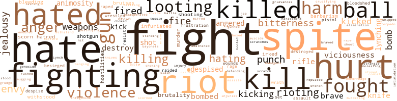
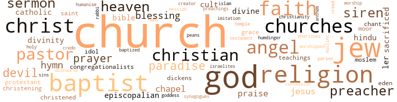

Branch of Velvet, by Underwood, Bert (1973)
508 music-related terms matched in this text.
Most frequent terms in this topic: music (137); piano (50); dance (39); singing (30); sing (16)
accordion.n.01
Definition: a portable box-shaped free-reed instrument; the reeds are made to vibrate by air from the bellows controlled by the player
| word | sentence |
|---|---|
| accordion | " . . . This breathtaking sheer evening gown , by Martinson , with all its delicate accordion pleats , is available in pastel shades of blue , green , peach and lavender . |
banjo.n.01
Definition: a stringed instrument of the guitar family that has long neck and circular body
| word | sentence |
|---|---|
| banjo | One delightful piece he wrote makes the piano sound like a banjo . |
bongo.n.01
Definition: a small drum; played with the hands
| word | sentence |
|---|---|
| bongo | After her call , Edith settled down in her chair , hearing bongo drums in the distance . |
boogie.n.01
Definition: an instrumental version of the blues (especially for piano)
| word | sentence |
|---|---|
| boogie-woogie | How can your people rave about boogie-woogie without an ounce of appreciation for this ? |
carillon.n.01
Definition: set of bells hung in a bell tower
| word | sentence |
|---|---|
| carillon | He liked the constant ringing of bells , from the ancient churches to the uni - versity 's new carillon tower . |
carol.n.01
Definition: joyful religious song celebrating the birth of Christ
| word | sentence |
|---|---|
| carols | Fred called Christmas evening while everyone was sitting around the crackling hearth , singing carols and drinking eggnog Madeline had made . |
caroling.n.01
Definition: singing joyful religious songs (especially at Christmas)
| word | sentence |
|---|---|
| caroling | I guess the children could settle for Santa Claus without snow , and have instead the warm lively experi - ence of Christmas in Georgia . . . the caroling , the visiting friends , church pageants and little speeches - all wonderful for them . " |
cello.n.01
Definition: a large stringed instrument; seated player holds it upright while playing
| word | sentence |
|---|---|
| cello | Are you still playin ' your cello ? " |
| cello | He would give up violin and switch to cello . |
| cello | He wanted to master the big mournful cello voice . |
| cello | By mid-November , John had become good enough at cello to switch to that instrument in the Grover and the All-City orchestras . |
| cello | John found a cello he liked ; it cost ninety dollars . |
| cello | He really began to appre - ciate having a room of his own , and would practice cello until someone came up to remind him it was bedtime . |
| cello | He got plenty of exercise lugging his cello to Grover High 's orchestra , then downtown to All-City orchestra . |
| cello | He 'd dutifully hit at any teaser , no matter his size , when Negro boys would laugh at his brother carry - ing his cello . |
| cello | After the fine concert , John rushed out to the audience to introduce his mother to his cello teacher . |
| cello | He de - cided to get the boy a better cello for Christmas , but Edith said it was too big a gift . |
| cello | John knew that he would n't be doing much cello practic - ing at home . |
| cello | Saturday he got up at 6:45 , took a shower , put on his blue serge suit , grabbed his cello and started out for the music school . |
| cello | " You have talent , feeling , and you know how to handle the cello . |
| cello | After the concert , Erhardt introduced him to a scraggly old man with a thick German accent , Dr. Hans Spaeth , professor of cello . |
chant.n.01
Definition: a repetitive song in which as many syllables as necessary are assigned to a single tone
| word | sentence |
|---|---|
| chant | He sings to the dewy morn , No thought of another 's ear ; But the song he sings is a chant for kings And the whole wide world to hear . " |
| chant | A brusque chant rose : " Nigger Street ! |
chapter.n.01
Definition: a subdivision of a written work; usually numbered and titled
| word | sentence |
|---|---|
| chapter | Through Chester , and with Walter White 's brilliant help , an NAACP chapter was now al - lowed . |
| chapter | He suddenly remembered that the second chapter of Genesis gives man control of things of the earth : " And man became a living soul . " |
| chapter | No need to mention that she was n't even active in the Detroit chapter . |
| chapter | Amherst 's chapter of Phi Kappa Psi initiated a Negro member . |
| chapter | me startin ' a chapter of the Humanity League here . " |
| chapter | The NAACP chapter now had come out in the open , and Edith 's brother , Bruce , had just been elected president . |
| chapter | Ernestine was soon considered a nominee for the presidency of the founding chapter of the Humanity League . |
| chapter | Slavery was only a short chapter in a long , long association . . . in the human bind . " |
| chapter | Now she was elected to head her chapter 's pledge club . |
| chapter | Madeline 's appearance thus handicapped her from being more active in helping the local chapter solve its difficulties . |
| chapter | For some time now , a group of our citizens have been interested in having a chapter of the NAACP here . |
clarinet.n.01
Definition: a single-reed instrument with a straight tube
| word | sentence |
|---|---|
| clarinet | Just as John had been , Clayton was on stage , playing clarinet in the hand . |
| clarinet | He himself played clarinet , trumpet and a little piano . |
clipping.n.01
Definition: an excerpt cut from a newspaper or magazine
| word | sentence |
|---|---|
| clippings | " Aunt Alice sent us clippings , " Madeline ex - claimed . |
| clippings | Caleb sent clippings to John , Judie and Clayton . |
| clippings | Win - ning a Decathlon medal for track , he got his picture in the Detroit News , and Edith proudly sent clippings to Georgia . |
| clippings | Edith proudly sent clippings to her family in Georgia , and to Caleb 's sisters . |
concerto.n.01
Definition: a composition for orchestra and a soloist
| word | sentence |
|---|---|
| concerto | He was still working on the piano concerto he had started years earlier for Wilfred Grey . |
| concerto | John had finished composing his piano concerto , and was now working on a symphonic suite for strings . |
| concerto | Autumn came again , and John 's piano concerto was performed in Hollywood . |
| concerto | So did his piano concerto . |
cornet.n.01
Definition: a brass musical instrument with a brilliant tone; has a narrow tube and a flared bell and is played by means of valves
| word | sentence |
|---|---|
| trumpet | He himself played clarinet , trumpet and a little piano . |
dance.n.01
Definition: an artistic form of nonverbal communication
| word | sentence |
|---|---|
| dance | Since Alice had no mother , Fannie Poindexter offered to shoulder the entertaining normally done by the bride 's family , and gave a formal dance for 150 guests at Price Hall , a new colored ballroom next door to Celeste 's hotel . |
| dance | " There 's a dance at the USO Saturday , Madeline . |
| dance | That Saturday Madeline began dressing for the dance by fluffing up her new short bob . |
| dance | " In an hour and a half we 're going to a dance , " she told him . |
| dance | " Going to a dance with a girl . |
| dance | " She rents tuxedos , and everybody goes there whenever there 's a wedding or big dance . |
| dance | That evening at the dance at the Colored USO in Mt. Clemens , Madeline could n't keep her mind off Fred Seymour . |
| dance | When the dance came to an end , she was dancing with a very fine flyer from California named Steve Morris , whom she considered the spitting image of Don Ameche . |
| dance | She saved it for the Friday night dinner dance at the Detroit Yacht Club . |
| dance | Edith was going to a dance with the Greys . |
| dance | Just for the heck of it , she wrote a short note to his sister , Crys - tal , who was back in Montgomery , telling her about her job , her car , and about a coming sorority dance . |
| dance | It sounded like dance music , and a bunch of kids standing outside the tent were busy keep - ing rhythm . |
| dances | Socials would be given by the Jack and Jill Club , the Girls Friendly , the Charity Club , plus all the fraternity and sorority dances . |
| dance | This year , they made her dance chairman for the St. Valentine 's dance , and Ernestine drove over to help her plan things . |
| dance | This year , they made her dance chairman for the St. Valentine 's dance , and Ernestine drove over to help her plan things . |
| dances | They had him playing for dances in the gym , and some girls were running after him . |
| dance | There was a school dance , but she did n't want to attend . |
| dance | He could handle piano classics quite well , but was better at popular dance music . |
| dances | But the dances drew mostly the chic mulatto beauties from the North End . |
| dances | They promoted four formal dances a year . |
| dance | In Feb - ruary 1938 Gus Dawson invited her to a formal St. Valentine 's dance given by the Charity Club . |
| dance | Madeline wrote a nice note , and Scott agreed to come and take Ernestine to the formal , provided Made - line would dance every other dance with him . |
| dances | The Charity Club had decorated the gymnasium of the new YWCA and had hired the Quentin Ross Orchestra , which played at the big adult dances . |
| dance | Everybody had a lovely time at the dance , except her . |
| dances | Gus Dawson was n't keen on ofay dances . |
| dance | The dance is three days away . |
| dance | Dorothy Grey spotted her doldrums , took her to see Katherine Dunham dance , then suggested she enroll in courses at Detroit City College . |
| dance | One evening when the girls were out attending a dance , just the four adults ate alone on the patio behind the Pickwick Hotel . |
| dance | At four sharp , the guests began arriving and the four-piece band under the tent began playing dance music . |
| dance | - Quick , somebody dance with me . |
| dance | - Come , Sol , honey , let 's dance . " |
| dances | We 've had five big dances and I have had to sing at each one . |
dance.n.02
Definition: a party of people assembled for dancing
| word | sentence |
|---|---|
| Dance | However , one evening after attending a performance at Lorraine Davis ' Dance School , Madeline decided to glance at a newspaper before retiring . |
| dance | Friends noted his Eddy Duchin style , urging him to try out for the school dance band . |
| dance | That year , she began singing with one of the three dance bands on campus . |
dance.v.02
Definition: move in a pattern; usually to musical accompaniment; do or perform a dance
| word | sentence |
|---|---|
| dancing | When the dance came to an end , she was dancing with a very fine flyer from California named Steve Morris , whom she considered the spitting image of Don Ameche . |
dance.v.03
Definition: skip, leap, or move up and down or sideways
| word | sentence |
|---|---|
| dance | We 'll dance . " |
| dance | Let 's dance . " |
| danced | He took her arms and danced close , while she threw back her head , smil - ing serenely . |
| dancing | On the windows , the drops pattered again , dancing to the strains of a symphony echoing softly from an upstairs apartment . |
| dance | That evening , every time a handsome lieutenant would dance with her , she thought of Fred . |
| danced | Steve also had danced with several of Lilian Collier 's friends , whom Madeline considered snooty . |
| dance | At that Army dance the other night , several boys were grabbing over me . |
| dance | Soon the lights came back on and dance music was started again . |
| danced | Mary danced with him to save the at - mosphere . |
| dance | Do n't you dance any more ? " |
| dance | Madeline wrote a nice note , and Scott agreed to come and take Ernestine to the formal , provided Made - line would dance every other dance with him . |
| dance | None of those guys would dance with me . . . because I 'm dark . " |
| dance | She would n't talk , acted stiff , wantin ' everyone to see her , make over her , dance with her . |
| dance | Lucy liked to dance and was always jolly . |
| danced | Each time they danced , she had been trying to tell him they could get cozy together . |
| dance | " You 've got to dance . |
| dance | As Sol led Alice out on the dance floor , Chester asked Madeline to dance , grabbing a boy nearby and putting him and Sarah Fields together without saying a word . |
| danced | " That was thoughtful of you , " said Madeline as they danced away . |
ditty.n.01
Definition: a short simple song (or the words of a poem intended to be sung)
| word | sentence |
|---|---|
| ditty | They were featuring a folksinger named Johnny Jahn , who sang his latest recording , a little ditty called : Put a Little More Catsup in the Stew , It went : " When you 're makin ' a pot o'stew , And you want it to taste just right , You put your mind to what you 're mixin ' 'Cause it 's easy to be fixin ' A tasty , pasty pan of heavenly brew --- " Just put a little mote catsup in the stew , to make a Greek a sheik , a Belgian a bedouin , A Bengali a Nepali , a Hun a Han , a Chu a Hindu , an I boo a Hebrew . |
etude.n.01
Definition: a short composition for a solo instrument; intended as an exercise or to demonstrate technical virtuosity
| word | sentence |
|---|---|
| Etude | In spite of nervousness , Judie handled well : Bach-Busoni 's Awake , the Voice Commands , Beethoven 's Sonata , Op. 79 , Chopin 's Scherzo No. 3 , and Etude in A Flat . |
guitar.n.01
Definition: a stringed instrument usually having six strings; played by strumming or plucking
| word | sentence |
|---|---|
| guitar | He also took guitar lessons , and enjoyed fixing cars and radios . |
| guitar | Eugene Bass played guitar and piano . |
| guitar | --- Hey , Pop , you know while you were all gone , I learned to play the guitar real good . |
hymn.n.01
Definition: a song of praise (to God or to a saint or to a nation)
| word | sentence |
|---|---|
| hymns | They 'd clap singing hymns , and a few women would always shout , just as Brother James moaningly would open the doors of the church . |
| hymn | The familiar old hymn made Edith remember Maple , and her own graduation from Porter Street School . |
| anthem | Madeline complained of having to stand and sing the national anthem in movie houses , with whites , who did n't want you sitting next to them in the same show . |
| hymns | The organist , a friend of John 's , played several soft hymns while communion was being served . |
| hymns | His choir was a little weak , but they sang hymns sweetly . |
| hymns | You don ' heah me singin ' no hymns ' bout the Promised Land . |
jig.n.01
Definition: music in three-four time for dancing a jig
| word | sentence |
|---|---|
| jig | " We-ell , in my day , in Arkansas , I 've seen enough darkies cuttin ' the jig . " |
jive.v.01
Definition: dance to jive music; dance the jive
| word | sentence |
|---|---|
| jiving | He felt Ernest should be in a white dorm , because in Negro rooming houses the boys were apt to spend too much time talking and jiving around . |
kettle.n.04
Definition: a large hemispherical brass or copper percussion instrument with a drumhead that can be tuned by adjusting the tension on it
| word | sentence |
|---|---|
| kettle | One afternoon while listening to a servant in the yard , singing by the old black laundry kettle , she realized that the Easter song , Were You There ? |
| kettle | Edith flushed a bit , busying herself with her kettle at the stove . |
| kettles | - Heah , Agnes , you watch de kettles . |
kick.v.04
Definition: kick a leg up
| word | sentence |
|---|---|
| kicking | Another , kicking them in the testicles . |
| kicking | As the yard grew darker , two more " hep - cats " jumped from the treetop and started up the walk , whistling and kicking at shrubbery . |
| kicking | Looking out the window , she saw Calvin Pritchard and one of his friends kicking cans down the street . |
| kicking | He went kicking cans again . |
| Kick | In Baltimore , the whites staged a big protest parade , carrying placards reading : " Kick 'em Out ! |
music.n.01
Definition: an artistic form of auditory communication incorporating instrumental or vocal tones in a structured and continuous manner
| word | sentence |
|---|---|
| music | Every - thing was grand , the stadium , the fast-moving Wolverine team , the fine music and precise stepping of the uni - versity 's excellent band . |
| music | " I gather you 're a Michigander , " he asked , as the music , Bye Bye Blues , rose in the air . |
| music | He changed to music . |
| music | He found another station with music . |
| music | And I doubt if the Army can come between him and the hypnotism of music . " |
| music | " That lovely child still loves music , and she 's still crazy about you ! " |
| Music | Music , dancin ' , some drinks , that 's my beat . |
| Music | " Music and dancing , okay , but I should warn you , I do n't drink and I do n't keep late hours . |
| music | " The music will be as charming as the clothes you wear . |
| music | She wanted Ernest to go to med school , Madeline to some fancy girls ' school where she could study music ; John would also study medicine or he could become a mortician , after finishing literary college . |
| music | - Do you like serious music ? " |
| music | " For any musical , the kitty has to be nearly a half-million before the music can he composed , props built , costumes ordered , and the first salaries paid . |
| music | Then she leaned hack , listening to the formal music , waiting for her light to flash . |
| Music | Then tonight , we 've got tickets to Lewisohn Stadium , for Frankie Si - natra 's Music from the Movies show . |
| music | " The Bran ton family were friends of my husband , and I knew the Dalencour sisters many years ago when both were studying music at Oberlin . |
| music | A sweet thing , she taught music at Southern for years , then after illness , returned to New Orleans , started a dressmaking shop . |
| music | " We call him ' the pro- fessor , ' because he 's so crazy for music . |
| music | So , an indoor party was planned , with tasteful food , music , and dancing in the basement recreation room . |
| music | The Mills Brothers became background music . |
| music | Soon the lights came back on and dance music was started again . |
| music | The hoodlum moved towards the door as the music blared : " Jelly Roll kill yo ' Pappy . |
| music | Roy and Caleb continued their pleas , while the troupe stumbled downstairs to the game room where the music was playing . |
| Music | Music and dancing started again . |
| music | At home , he sat in his favorite chair , enjoying the last bit of 1913 , a cigar , a little music and some light reading . |
| music | I 'm enjoying some music and shows . |
| music | " I 'm definitely going back to music , " John re - plied . |
| music | " I 'm interested in music too ! " cried Clayton . |
| music | Since he could find nobody in this outfit to like as a friend , he took theory classes at night , and allowed himself to get wrapped up in music again . |
| music | There was music in the air , and lots of servicemen on the streets . |
| music | The music was something fantastic . |
| music | It sounded like dance music , and a bunch of kids standing outside the tent were busy keep - ing rhythm . |
| music | Mazur seemed real interested in the music , and stuck near the piano . |
| music | She could n't imagine the people on Bennett Avenue just sitting around after a meal , enjoying nature and classical music . |
| music | One thing nice about New York , you can always get good music . " |
| music | Jeff found a station with good music , then began to concentrate on his driving . |
| Music | Every Saturday morning Madeline went alone on the streetcar , through downtown Detroit to the Conserva - tory of Music . |
| music | Two days later , she called John at eleven p.m. , not wanting to talk music , just things in general . |
| music | They 're going to have enough trouble having chosen music as their life 's work . " |
| music | " I kind of like the music angle , " Bemus admitted . |
| music | John went back to Michigan and began working on his Master 's in music . |
| music | Joan Remus returned , to continue her Master 's in music education , and her brother Ted began his Ph.D. studies in literature . |
| music | He recalled the balmy weather , bountiful flowers , succulent food , hospitable neigh - bors , music in the air , friends - a relaxing , happy way of life . |
| music | Dean Dixon , conductor , won the Ditson awafd for distinguished service to American music . |
| music | At 22 , he was quite a ham organist , making money on gospel music . |
| music | She was a music sophomore at Wayne , and also studied at the Conservatory . |
| music | Unlike Wilfred , she was trying to make it on simple music --- Negro spirituals , mostly . |
| music | To various clubs where they have good music . |
| music | I ' in thinking seriously of getting into music . |
| music | " First it was medicine , then political science , journalism , sociology , and now music . " |
| music | " I 've always liked music the best . |
| music | For me , right now , music seems most honest . |
| music | That July , he enrolled in a music theory course at the Conservatory . |
| music | As he promised his father , he did n't hang out in bars , but still listened to jazz music on Friday nights with one or two friends . |
| music | Clayton now was a fulltime music student , still holding high regard for religion and politics . |
| music | The inspiring music and pageantry seemed to join the religious , political and family aspects of nationhood . |
| music | Edith said he was too young , and his Dad explained that music was n't for boys , that he could do other things with his hands , like constructing with his Erector set . |
| music | When the boy mastered music in short order , Ernest became strongly against it . |
| music | To break the music habit , every Saturday he 'd take Ear ! |
| music | forgot music . |
| music | Aside from his teaching , he had been very busy that autumn composing music for a television show . |
| music | She liked music and she also liked colored guys . |
| music | She had a private room , and spent the rest of the day listening to music on a small radio by her pillow . |
| music | Edith thought it a shame , with all Joan 's ability and degrees in music . |
| music | John figured they still did n't like his music world . |
| music | As usual , Sadie Hicks scented he was home , and came by , big and swarthy as ever , ready to discuss love and not music . |
| music | Telephoning daily , she persisted in annoying John , and he coolly withstood it , considering how she had inspired his music in earlier years . |
| music | Like a subway push , the music sounds terrible ! " |
| music | " I hear music is wonderful out there . " |
| music | It was n't about music . |
| music | Nothing comes before music with him . |
| music | Young people in recital , presenting classical music . |
| music | His music has all the excitement of that great age in America 's past . " |
| music | " There 's one celebrated Israeli pianist who has made some fine recordings of Gottschalk 's music . |
| music | Then soon after he moved in , a Negro lady across the street called the police about the music . |
| music | He 'd invite them to his basement apartment for cocktails and music . |
| music | Dorothy says they 're having a family , and that 's certainly time to give up this music foolishness . |
| music | He and Clayton had become friends , and often discussed music or double-dated . |
| music | She was big-time in Madison Avenue commercials , while Eugene went West to earn his music degree at UCLA . |
| music | " And the music ? " |
| music | The African slaves had their music , and we did use some of it . |
| music | He put his mind on music , playing for Carrie 's morning service the whole of July and August . |
| music | This whole idea of music and being white has gone to your head . " |
| music | He was really no stranger to the Seattle music community , but he knew that his old teacher Erhardt 's mighty recommendation had made all this luck possible . |
| music | He knew that most kids at Nettleson liked music . |
| music | Clayton and Judie would listen to their brother play , and ask to be taught some of the groovy music . |
| music | He had had no idea John 's music world was so busy . |
| music | That 's how he allowed himself to fall completely in love with music . |
| music | They liked loud , screaming music with coarse lyrics Celeste knew came from the backwoods of Dixie . |
| music | Both Gershwin and Bizet 's music fits us fine . " |
| music | A nice guy , he agreed with Clayton 's praise of Joan Baez , then kept asking about " black music . " |
| music | --- Well , now , to music . |
| music | Early blues was extemporaneous soul music of a people , emphasizing their trials , not their color . |
| music | When you ask about ' black folk music , ' 1 should add that in the 19th Century , and beyond , the country 's music really was n't that racially divided . |
| music | When you ask about ' black folk music , ' 1 should add that in the 19th Century , and beyond , the country 's music really was n't that racially divided . |
| music | The colored papers gave Alfred good write-ups , knowing his father 's dedication to music , and his grandmother 's spot in Detroit Negro society . |
| music | His spirited recordings of loud organ music and gospel singing had made him much money . |
| music | That December , the press advertised his appearing at the Michigan Theater to revive pipe-organ music . |
| music | Then high school brought better music and lovely Joan Bemus , the air staying charged like good wine , even through their wonderful heaven in Ann Arbor ; alas , through time , that Joan became his enemy , and also through a color thirst , yet forever there in his son 's blood . |
| music | He wanted me to remember him in music . |
| music | I believe I have all the riches in the world with my family and my music . " |
| music | My wife and I , we look at a whole lot of TV , and we like music . . . mostly modern jazz , but some classical stuff . |
| music | With that beautiful music in yo ' record , I think you 've made a fine contribution to the human race ... as an individual . " |
| music | On Tuesday , Richie had Madeline down to his hotel for a New York-type dinner , with wine , candles , some laughter , and the beautiful music of Peggy Lee . |
| music | Other Negro Baptist churches had noisy preachers teaching fear the Devil , with loud , tense music . |
| music | She praised his music contribution and activeness in school affairs . |
| music | John had music on his mind , and would hum songs all the way home . |
| music | Aside from violin studies , and orchestra , he 'd play classical music with friends after school . |
| music | Edith remarked that his classmates were all white , and Caleb defended John , knowing the boy was more concerned about music than skin color . |
| music | He kept his revelations to himself , because he knew that his parents had definite ideas about his fu - ture , and music was not on the slate . |
| music | He could handle piano classics quite well , but was better at popular dance music . |
| music | The music was considered excellent . |
| music | As much as John loved film music , he only got to four features that fall . |
| music | The music was swell for dancing and everyone had a good time . |
| music | Ernest , frowning on the friend - ship of the two boys , and their music , returned to Roth - man 's . |
| music | At school he was getting his first experience with symphonic music . |
| music | She was the only one who talked as if music had to be his career . |
| music | While Caleb did not want John to become serious about music , he would not object just now . |
| music | He accompanied his son on a trip to a number of dusty old music and pawn shops . |
| music | At five to eleven , Mrs. Lucas , the organist , would fumble through some secular music . |
| music | He got more music out of the instrument than Mrs. Lucas ever had . |
| music | A marvelous place if Madeline is really serious about her music . |
| music | Alice loved music and beautiful clothes . |
| music | He was forming a dinner music ensemble . |
| music | The big orchestra 's music echoed nicely in Cass High 's huge auditorium , impressing Edith , Dorothy and the children . |
| music | " I hope you 're going to let him continue in music . " |
| music | Give him a little encouragement in music , Mrs. Parker . |
| music | " Well , " Caleb sighed , " if they say he 's talented , maybe you 'd better let him try his luck in music . " |
| music | He asked if he knew solos , then told him to bring his music the next Saturday , and an ac - companist . |
| music | In March 1918 , Caleb got around to popping the big question to this proper , shy girl who loved music . |
| music | He finally wound up with English , freshman chemistry , geography , music , and phys-ed . |
| music | He also had to work ten hours a week in the music library , to satisfy requirements of his NYA work scholarship . |
| music | You 're music . |
| music | Sher - man had made him a little ashamed about his study of music . |
| music | As much as he wanted to lock himself in , to compose or make good music , he knew he had to be two people . |
| music | At four sharp , the guests began arriving and the four-piece band under the tent began playing dance music . |
| music | While he had done well in science and general subjects , he wrote his folks that it was music he had to study . |
| music | Applied music at the college level . |
| music | While they had liked the idea of Wilfred being a doctor , they felt he was especially talented in classical music . |
| music | In a letter he explained that aside from the clear spiritual vows , he adored the music of the church . |
| Music | Music certainly softens all their racial hate . |
| music | I 'll make telephone calls , get flowers , dresses , maybe some music ... it sounds real interesting . |
| Music | How could they take him when he was to receive his Bache - lor of Music degree that August , just eight months away ? |
| Music | Music was part of the sad reason ; his draft board did not regard it as a subject crucial for defense . |
| music | He came with a flashy wardrobe of sports clothes and a few albums of classical music . |
| Music | Music builds like math - ematics . |
| music | As she left , Scott eased back , becoming absorbed again in music , whiskey and reflections . |
musical.n.01
Definition: a play or film whose action and dialogue is interspersed with singing and dancing
| word | sentence |
|---|---|
| musical | I 've just put a few pennies into a new Billy Rose-Oscar Hammer - stein musical which opens soon . " |
| musical | " Do you think you can manage to take her to something musical while you 're here in Detroit ? |
musical_instrument.n.01
Definition: any of various devices or contrivances that can be used to produce musical tones or sounds
| word | sentence |
|---|---|
| instrument | Edith knew it was a grand instrument by its deep bass voices and clear flute tones . |
| instrument | Playing an instrument , they feel superior , actually thinking themselves NBC soloists when it should be ensemble blending . |
| instruments | Clayton got himself a new Pontiac station wagon , to hold all the instruments , and felt like a real businessman . |
| instrument | By mid-November , John had become good enough at cello to switch to that instrument in the Grover and the All-City orchestras . |
| instrument | He got more music out of the instrument than Mrs. Lucas ever had . |
| instrument | In my or - chestra , I insist that every instrument is in top shape . " |
| instruments | He had to learn something about all instruments . |
organ.n.05
Definition: wind instrument whose sound is produced by means of pipes arranged in sets supplied with air from a bellows and controlled from a large complex musical keyboard
| word | sentence |
|---|---|
| organ | The vastly magnificent marble interior and the roaring pipe organ struck more of the kids ' interest than hearing Al Jol - son sing Mammy in a first talking picture . |
paean.n.02
Definition: (ancient Greece) a hymn of praise (especially one sung in ancient Greece to invoke or thank a deity)
| word | sentence |
|---|---|
| peans | With Europeans trying to flee the country was Clayton 's friend , Frances Ruben , with an American Negro girl . |
passage.n.06
Definition: a short section of a musical composition
| word | sentence |
|---|---|
| passages | After a while , Judie played everything with as much force as she could , then would vary it with very soft and delicate passages . |
phrase.n.02
Definition: a short musical passage
| word | sentence |
|---|---|
| phrase | And the Negro community across the nation coined its new phrase , " Burn , baby , bum ! " |
piano.n.01
Definition: a keyboard instrument that is played by depressing keys that cause hammers to strike tuned strings and produce sounds
| word | sentence |
|---|---|
| piano | He was still working on the piano concerto he had started years earlier for Wilfred Grey . |
| piano | " He plays beautiful piano , " said Madeline , legs crossed in a flattering position . |
| piano | They had a woman playing piano in the best jazz fashion , one beating a tambourine , and a man play - ing a saxophone . |
| piano | My piano is in the studio over the garage . " |
| piano | Mazur seemed real interested in the music , and stuck near the piano . |
| piano | Edith said maybe next year , but for now , she would continue her piano . |
| piano | Yes , she still played the piano . |
| piano | Since Joan 's been away , the piano does n't get touched . |
| piano | That joyous evening , Edith played her mother 's piano , then called Detroit so everybody could say " Merry Christ - mas " to Caleb . |
| piano | When they got home , his second surprise was wait - ing - a small , new , Wurlitzer upright piano for Edith . |
| piano | John had finished composing his piano concerto , and was now working on a symphonic suite for strings . |
| piano | Lilian Collier , Betty Kemp , and her little cousin , Mae , were all doing well at piano , but not Madeline . |
| piano | He 'd pick out a few piano tunes , but only to annoy Madeline . |
| piano | Lucy let him take a few piano lessons . |
| piano | The piano was locked , and catching the idea , Ear ! |
| piano | Their daughter , Christine , at seven , was beauti - ful like her mother , good at piano but mostly concerned with being a lady . |
| piano | Now he had his own apartment in the basement of his two - family flat , all equipped with piano , drums and olarinef . |
| piano | He himself played clarinet , trumpet and a little piano . |
| piano | Eugene Bass played guitar and piano . |
| piano | One delightful piece he wrote makes the piano sound like a banjo . |
| piano | Another wifely duty was to perform with John a four-hand piano piece by Glinka . |
| piano | If he could play jazz piano and also some ball , he was sure they 'd accept him as an all-around guy . |
| piano | He prepared himself by picking out on the piano all the songs he heard on radio . |
| piano | Sadie Hicks , a heavy girl in his class , was great on piano . |
| piano | Also a bit stuck on Johnny , she 'd invite him to her house on Saturdays and teach him all the great chords and harmonies of jazz piano playing . |
| piano | Judie , like Madeline , was taking lessons , but both girls were rather nonchalant about the piano . |
| piano | Autumn came again , and John 's piano concerto was performed in Hollywood . |
| piano | So did his piano concerto . |
| piano | They were supposed to stop back through Detroit to attend the piano debut of Wilfred Grey 's son , Alfred , who at nine was considered a prodigy . |
| piano | He could hear Sadie Hicks ' fine piano chords . |
| piano | I 'd play piano for a singing class and tell stories to two other classes . |
| piano | Rruce and his wife , Pearly , had passed through Detroit and had heard John play piano . |
| piano | John , sitting at the piano , took to composing . |
| piano | Leav - ing Carol at her steps , John would get called in by Dorothy Grey , for a snack or to play something on her fine Knabe grand piano . |
| piano | At home , Johnny played a bit of relaxing piano every day . |
| piano | He could handle piano classics quite well , but was better at popular dance music . |
| piano | With his consent , she got herself a grand piano , new drapes , a nice strand of pearls and a fur coat . |
| piano | Wilfred was now a serious piano student at the Detroit Conservatory , and also studied organ with Miss Ger - trude Hobson , the gracious elderly lady who had been organist at St. Martin 's for half a century . |
| piano | After dinner , John played a cello solo and Mary Ann accompanied him on the piano . |
| piano | There were ice-cream socials and other parties , and the house generally rang with piano play - ing , Victrola voices , laughter and Ruth 's chirping canaries . |
| piano | Then , she ex - pressed an interest in a player piano , and her father got it without a reminder . |
| piano | All she could do was play Melody of Love on the piano , using Bustle of Spring for her encore . |
| piano | In September , Wilfred Grey went off to Yale Uni - versity to study piano . |
| piano | Back in Detroit Judie was preparing for her first piano recital . |
| piano | Now with it over , she rested from piano for more than a week , until Ola 's chastisement brought her to the key - board again . |
| piano | They studied piano with Professor Compton Taylor , and crocheting with the talented seamstress , Miss Molly Rankin . |
| piano | At home , the disappointment was easier taken when they learned that Dorothy Grey 's Wilfred , at Yale , had decided to major in piano , and the Greys had said " Okay . " |
| piano | Everyone had nearly finished eating , so Edith asked Judie to play something nice on the piano . |
| piano | John , most touched , sat down at the piano and asked her to sing the Bing Crosby hit . |
| piano | Carrie generously gave them an old sofa , an old bed , and an old piano . |
pipe.n.04
Definition: a tubular wind instrument
| word | sentence |
|---|---|
| pipe | The vastly magnificent marble interior and the roaring pipe organ struck more of the kids ' interest than hearing Al Jol - son sing Mammy in a first talking picture . |
| pipe | Myles lit his pipe and crossed his legs . |
| pipe | Caleb lit his pipe and smiled . |
| pipe | " Such a power grab can happen in any family or business , but you do n't puff a peace pipe to such bad behavior . |
| pipe | " Yes , surely , " said Caleb , chewing on his pipe . |
| pipe | Soon Caleb came through the back door with his pipe fuming . |
pizzicato.n.01
Definition: a note or passage that is played pizzicato
| word | sentence |
|---|---|
| pizzicato | With the pizzicato theme fin - ished , he opened his eyes , smiled , then grabbed her wrist . |
promenade.n.01
Definition: a formal ball held for a school class toward the end of the academic year
| word | sentence |
|---|---|
| prom | From California , news came that Andrew Collier had married --- beauteous Nell Sprague , from a prominent , rich , white family . |
| prom | And the North beckons with many new prom - ises . |
ragtime.n.01
Definition: music with a syncopated melody (usually for the piano)
| word | sentence |
|---|---|
| ragtime | Edith gave a little ragtime from her youth , Everybody 's Two-Step , and the small fry loved it . |
rhythm.n.01
Definition: the basic rhythmic unit in a piece of music
| word | sentence |
|---|---|
| beat | Music , dancin ' , some drinks , that 's my beat . |
rhythm.n.04
Definition: the arrangement of spoken words alternating stressed and unstressed elements
| word | sentence |
|---|---|
| rhythm | Worth , very impressed , congratulated John for clarity and sweetness of tone , and complimented Mary Ann for her precise rhythm and delicate accom - panying level . |
rumba.n.01
Definition: syncopated music in duple time for dancing the rumba
| word | sentence |
|---|---|
| rhumba | A rhumba now was playing , and Madeline skillfully weaved herself about . |
sax.n.02
Definition: a single-reed woodwind with a conical bore
| word | sentence |
|---|---|
| saxophones | The soft silver timbre of saxophones and trumpets rose up in muted splendor . |
| saxophone | They had a woman playing piano in the best jazz fashion , one beating a tambourine , and a man play - ing a saxophone . |
section.n.01
Definition: a self-contained part of a larger composition (written or musical)
| word | sentence |
|---|---|
| section | They resented the fact that the paper called it the colored section of town . |
| section | We runs this section o ' town . |
| section | - The downtown section is seething and tense . |
| Section | Ira Bostic , dr. was let out under a Section 8 ; he was considered loo nervous . |
| section | Eventu - ally , Tom , Sr. opened a spanking new office Uptown in the white business section . |
| section | She wanted to close down that section , and expand the lunch counter . |
sing.v.02
Definition: produce tones with the voice
| word | sentence |
|---|---|
| sings | " I envy the farmer 's boy Who sings as he follows the plow ; While the shining green of the young blades lean To the breezes that cool his brow . |
| sings | He sings to the dewy morn , No thought of another 's ear ; But the song he sings is a chant for kings And the whole wide world to hear . " |
| sing | was Caleb 's sing - song . |
| sing | Kurt told us you used to sing with a college band . |
| sing | She also enjoyed Billy Eckstine sing - ing Everything I Have Is Yours . |
| singing | At dessert time , more candles were lit , and the girls started singing Happy Birthday when Ola and Bessie brought in two birthday cakes . |
| sang | Fred sang a little Christmas mes - sage . |
| sang | Afterwards , the principal , Mr , Rivers , made some introductory remarks , then the school choir sang Lead On , O King Eternal . |
| singing | She herself began singing in Brother James ' choir . |
| sing | Madeline complained of having to stand and sing the national anthem in movie houses , with whites , who did n't want you sitting next to them in the same show . |
| sang | She and Johnny would laugh deep down in their seats when - ever a quartet started its wailing , or the congregation sang unaccompanied ante helium hymns . |
| sang | When people sang them , she 'd see tears in their eyes . |
| sang | When the teen-age soprano , Geraldine Hudson , dutifully sang Swing Low , Sweet Chariot , it brought down the house . |
| sing | They asked to hear Caleb sing , as he had done in his youth , with Edith accompanying . |
| sung | When Caleb read the news , he thought of the Negro National Anthem , Lift Every Voice and Sing , which was always sung at church programs . |
| sing | It was changing times even in New York ; for the first time , Negroes were allowed to sing major roles in the Metropolitan Opera , and great applause went to Marion Anderson and Robert McFerrin . |
| sung | The Mattie Three bad as their theme song It 's Mattie , which was still being sung everywhere by Sarah Vaughan . |
| sang | They were featuring a folksinger named Johnny Jahn , who sang his latest recording , a little ditty called : Put a Little More Catsup in the Stew , It went : " When you 're makin ' a pot o'stew , And you want it to taste just right , You put your mind to what you 're mixin ' 'Cause it 's easy to be fixin ' A tasty , pasty pan of heavenly brew --- " Just put a little mote catsup in the stew , to make a Greek a sheik , a Belgian a bedouin , A Bengali a Nepali , a Hun a Han , a Chu a Hindu , an I boo a Hebrew . |
| sing | A sit-in at Golden Gate Park brought ten thousand of them , to laugh and sing , and to smoke marijuana . |
| sang | The Negro of old sang spirituals , blues and general American folk songs . |
| Sing | " I appreciate your enlightenment , " said the Singhalese , about to leave them . |
| sang | " You know , when I sang in Bellevue Hospital , I asked patients what they wanted to be called , and most of them said ' black . ' |
| sang | Solomon and little Caleb often sang Alice Blue Gown to her , as she looked so delicate and sweet in her crib . |
| sang | His choir was a little weak , but they sang hymns sweetly . |
| sing | To please people , he 'd invite gospel groups , and quartets , to sing spirituals . |
| sang | Evelyn sang in the choir , and was very devout . |
| sing | " Well , startin ' at the beginnin ' . . . about three years ago I used to sing in the choir . |
| sing | During Friday-night rehearsals , it was customary for Brother Pastor to come and sit in hack awhile , listenin ' to us sing . |
| sang | Joan made words for his ballad , Sunshine in the Meadow , and her brother , Ted , sang it at an afternoon function at Temple Baptist where they went . |
| sang | Upon request , Caleb sang The Rosary and Open the Gates of the Temple , two songs he had sung as a teenager for his father , Solomon , who loved the fact that his boy sounded just like John McCormick . |
| sung | Upon request , Caleb sang The Rosary and Open the Gates of the Temple , two songs he had sung as a teenager for his father , Solomon , who loved the fact that his boy sounded just like John McCormick . |
| sing | I wanted so much to ask him to let me sing , but I got cold feet . |
| sing | It made me want to sing and sing . |
| sing | It made me want to sing and sing . |
| singing | That year , she began singing with one of the three dance bands on campus . |
| sing | We 've had five big dances and I have had to sing at each one . |
| sing | John , most touched , sat down at the piano and asked her to sing the Bing Crosby hit . |
| sang | For the offertory , they sang , All Things Come of Thee , O Lord . |
singing.n.01
Definition: the act of singing vocal music
| word | sentence |
|---|---|
| singing | " I just had my radio on , and a white choir was singing beauti - fully , ' America , America , God sheds his Grace on Thee . ' |
| singing | You know , with clear diction , all civilized , that perfect singing sound . |
| singing | Igor is the singing lead in Zienfeld Follies , with Milton Berle , now at the Winter Garden . |
| singing | Madeline suddenly remembered Talladega , and her brief singing career . |
| singing | They 'd clap singing hymns , and a few women would always shout , just as Brother James moaningly would open the doors of the church . |
| singing | Fred called Christmas evening while everyone was sitting around the crackling hearth , singing carols and drinking eggnog Madeline had made . |
| singing | Just before the Georgia trip , Madeline took her mother downtown to see the movie Cover Girl , and they came away singing Long Ago and Far Away , Ed - ith cheerfully tried to persuade Judie to join them on the trip South , hut Judie had gotten herself hired as a clerk-typist with the War Production Board , earning $ 44 a week . |
| singing | As they led him away , the choir began singing : Just as l am , without one Plea , But that Thy Blood was shed for me . |
| singing | Some - body on the radio was singing : I 'm an Old Cowhand . |
| singing | She asked her mother if she could stop piano lessons and take up singing . |
| singing | Edith had asked them to come at 7:30 since Judie was singing with St. Martin 's choir and had to leave early for midnight mass . |
| singing | Madeline and the twins were upstairs listening to Victrola records , with Madeline singing Love is the Sweetest Thing , trying to ape the soprano 's voice . |
| singing | Margaret Truman was making her radio debut singing with the Detroit Symphony , and the Negro community , being concerned about the President 's daughter , wanted to hear it . |
| singing | They moved in on the last Fri - day in October 1933 , all hands helping the moving men , and cheerfully singing Who 's Afraid of the Bin Bad Wolf ? |
| singing | When the season ended in April , she was the only one who had new work --- singing some television commercial . |
| singing | At the grave , as the dirt moved in , he could hear himself singing to his Edith many sweet years earlier : " Macushla , Macushla , your sweet voice is calling . . . / hear it in vain . . . Your red lips are saying That death is a dream , and love is for aye . . . Awake from your dreaming . |
| singing | At the farm , he noticed that birds no longer charmed the air with their singing . |
| singing | One afternoon while listening to a servant in the yard , singing by the old black laundry kettle , she realized that the Easter song , Were You There ? |
| singing | Negroes kept moving , and singing : " We ai n't gon na let nobody turn us around . " |
| singing | Alone , Caleb tried to concentrate on the beauty of the robins and sparrows singing outside his window . |
| singing | I 'd play piano for a singing class and tell stories to two other classes . |
| singing | They had squirrels and singing birds . |
| singing | Made - line was progressing slowly with her singing lessons . |
| singing | At eleven sharp , the big choir of forty loud voices would come slowly down the aisle , singing All I fail the Power of Jesus ' Name , their heads crowned in maroon mortar boards , and bodies draped in long maroon robes . |
| singing | Let 's talk about Joe Louis , or that lovely girl singing with a white band . . . what 's her name , Judie ? " |
| singing | As she entered the Terminal she heard Kate Smith singing God Bless America . |
| singing | To be manly , Caleb allowed his raucous voice to ring from the bathroom , singing Onward , Christian Soldiers - his usual way of re - minding the household that the Sabbath had come . |
song.n.01
Definition: a short musical composition with words
| word | sentence |
|---|---|
| song | He sings to the dewy morn , No thought of another 's ear ; But the song he sings is a chant for kings And the whole wide world to hear . " |
| song | was Caleb 's sing - song . |
| song | especially an organist named Goutoud who 'd play our favorite , a 1927 song called Just a Memory . |
| song | " Angel , what we need to keep this thing going is a song from you . |
| songs | People were all humming songs like : Poinciana , You 'll Never Know and I 'll He Seeing You . |
| song | I 've heard that song before . |
| song | As for herself and new life , she could like a song just " breeze along with the breeze . " |
| song | The Mattie Three bad as their theme song It 's Mattie , which was still being sung everywhere by Sarah Vaughan . |
| song | " That 's a good idea for a folk song . |
| songs | The churchgoers , knowing mostly gospel songs , liked his high-toned stuff just grand . |
| Song | in A Minor , Ralph Vaughan Williams ' English Folk Song Suite , then Poulenc 's Piano Concerto in D Minor , featuring two local girls . |
| songs | He prepared himself by picking out on the piano all the songs he heard on radio . |
| song | As the room became filled with song , Amy knew that Jesus was there . |
| songs | The Negro of old sang spirituals , blues and general American folk songs . |
| songs | CHAPTER XLVI Soon spring came again , and Caleb knew it at 4:30 in the morning when the birds serenaded him with their delicate morning songs . |
| songs | John had music on his mind , and would hum songs all the way home . |
| songs | At 10:40 , the deacons began humming ante helium songs and Nearer the Cross . |
| songs | Upon request , Caleb sang The Rosary and Open the Gates of the Temple , two songs he had sung as a teenager for his father , Solomon , who loved the fact that his boy sounded just like John McCormick . |
| songs | The beer and old Michigan songs mixed in a veil of suspense . |
spiritual.n.01
Definition: a kind of religious song originated by Blacks in the southern United States
| word | sentence |
|---|---|
| spirituals | She did n't like spirituals . |
| spirituals | The Negro of old sang spirituals , blues and general American folk songs . |
| spirituals | To please people , he 'd invite gospel groups , and quartets , to sing spirituals . |
| spirituals | Negro spirituals would now be taught in mu - sic classes . |
suite.n.01
Definition: a musical composition of several movements only loosely connected
| word | sentence |
|---|---|
| suite | John had finished composing his piano concerto , and was now working on a symphonic suite for strings . |
| suite | " Honey , did n't his last letter mention that his symphonic suite is soon to be performed in Rome ? |
swing.n.05
Definition: a style of jazz played by big bands popular in the 1930s; flowing rhythms but less complex than later styles of jazz
| word | sentence |
|---|---|
| jive | " Coase if you wants to blow yo ' top wid me , well now , dat 's ma kinda jive . |
| jive | I never had no appetite for dill pickles an ' all that jive . " |
| jive | --- Man , once they turned oil the real ' welcome-home , ' we did n't want none of that jive . |
symphony.n.01
Definition: a long and complex sonata for symphony orchestra
| word | sentence |
|---|---|
| symphony | The other lady is the widow of Do - ris Gragorsky , who used to conduct our symphony . " |
| symphony | On the windows , the drops pattered again , dancing to the strains of a symphony echoing softly from an upstairs apartment . |
| symphony | Judie was com - pletely in her mecca with lectures , symphony concerts and research facilities in the fresh , clean climate . |
| symphony | When he told his parents how he sat under redwoods , writing his new symphony , they just nodded their heads . |
| symphony | He was known too because Mount Clarion College was on the radio each Sunday morning and the announcer always said : " The college symphony is led by the very able John Parker . " |
| symphony | He particularly liked Ted and Joan Bemus , and would visit their house in Maplewood to listen to symphony records . |
| symphony | He had a very important meeting with Mr. Gunnar Erhardt , conductor of the university symphony , who , in spite of his name , was a lean , blond American from Bluefield , West Virginia . |
| symphonies | It 's one of the greatest symphonies written . " |
tambourine.n.01
Definition: a shallow drum with a single drumhead and with metallic disks in the sides
| word | sentence |
|---|---|
| tambourine | They had a woman playing piano in the best jazz fashion , one beating a tambourine , and a man play - ing a saxophone . |
tenor_drum.n.01
Definition: any of various drums with small heads
| word | sentence |
|---|---|
| tom-toms | There were no lions , tom-toms , or wild men with spears . |
theme.n.03
Definition: (music) melodic subject of a musical composition
| word | sentence |
|---|---|
| theme | The Mattie Three bad as their theme song It 's Mattie , which was still being sung everywhere by Sarah Vaughan . |
| theme | With the pizzicato theme fin - ished , he opened his eyes , smiled , then grabbed her wrist . |
tune.n.01
Definition: a succession of notes forming a distinctive sequence
| word | sentence |
|---|---|
| Lines | Lines of smelly people pushin ' everywhere . |
| line | That 's his line . " |
| line | " Deliver me from the scheming so-called gentle - man , always having a line for a girl . " |
| lines | Buses are being stopped , and trolleys pulled off their lines . |
| line | " You did n't have to wait in my line , " he said . |
| tune | I know you 've made a small for - tune masquerading as a white model . " |
| melody | The biggest fault for Negroes is speech melody . |
| melody | Ran yo ' Mammy stone blind . . . " Caleb bad no power to stop the hoodlums from moving toward the captivating melody . |
| line | He handed her license to the next officer , who likewise was only interested in reading one line , the line about race . |
| melody | Maybe it was the grey rain falling , the sad memory of the train whistle or that , captivating new blues melody , Blues in the Night . |
| melody | Just then , the French horns soared with the melody of the Coro-nation March . |
| melodies | Like in Detroit , the Georgia air was charmed by melodies . |
| line | Only thing , he coidd n't keep the unions in line . |
| line | Instead of the usual black , he ordered a dark metallic blue , with a thin silvery ornamental line , and initials on the door . |
| tunes | Her mind went back to John at five , a peaceful , obedient towhead , loving riddles and old English folk tunes . |
| lines | You must be perfect , and the silly race lines they draw must be observed . " |
| tunes | He 'd pick out a few piano tunes , but only to annoy Madeline . |
| line | He was a year younger and fell right in line minding Jutta and calling his new parents " Mom " and " Dad . " |
| line | Still a bit weak , Madeline dressed in a pretty green and tan chiffon , and accompanied her friend to the movie version of Carmen Janes . |
| melody | That old spiritual melody was too haunting now . |
| melody | The Irish melody , Macushla , kept coming into his head . |
| line | Monroe Street Baptist also handed out day-old bread , and the poor would stand in line for it every morning . |
| line | Richie wanted to attend Caleb 's funeral , but Madeline advised him not to . |
| melodies | Buy - ing manuscript paper , he went through the tedious task of notating melodies from his head . |
| melodies | After a show , he 'd compose new melodies of his own . |
| melodies | Aside from the tantalizing melodies , his head swam with telephone calls from gorgeous Mary Ann Collier and exotic Carol Bostic . |
| lines | He knew a lot about speech , and gave her some good pointers on learning her lines . |
| Melody | All she could do was play Melody of Love on the piano , using Bustle of Spring for her encore . |
| line | She knew his was a line , but an enjoyable one . |
| line | First she thought she 'd get hack on the Greenridge line and ride up there to see if she could find her sister , Mary , but her feet were killing her so , she went on home . |
upright.n.02
Definition: a piano with a vertical sounding board
| word | sentence |
|---|---|
| upright | They were that American , and there was so little in the press or on radio about upright , active and progressing colored people . |
violin.n.01
Definition: bowed stringed instrument that is the highest member of the violin family; this instrument has four strings and a hollow body and an unfretted fingerboard and is played with a bow
| word | sentence |
|---|---|
| violin | Any boy who 'd get his parents to sign up for a year 's lessons would get a free violin . |
| violin | In a matter of flays he visited the Swansons , and Ed got a beautiful violin free , and started his weekly lessons . |
| violin | Ed Swanson continued to progress on the violin , but now Ernest had no interest in it . |
| violin | In Maple , Edith 's brother , Rruce , who operated the Poindexter insurance firm , gave her a special gift to take to Johnny , It was a handsome old violin which had been in the family about seventy years . |
| violin | The violin would keep him exploring in the musical field . |
| fiddle | Little Judie was given the task of getting the precious fiddle safely to Detroit . |
| violin | They wanted the violin checked through , not caring that it might get broken in the baggage car . |
| violin | Edith told John about the inconveniences , and Judie 's struggle to get his violin to him . |
| violin | Judie and others wanted to play on the violin , but he protected it . |
| violin | Aside from violin studies , and orchestra , he 'd play classical music with friends after school . |
| violin | The two of them also practiced violin , since they had been selected to represent their school that autumn in the All-City High School Orchestra . |
| violin | He would give up violin and switch to cello . |
| violins | After two or three engagements , Mr. Worth de - cided he needed more violins , and picked four more . |
warble.v.01
Definition: sing or play with trills, alternating with the half note above or below
| word | sentence |
|---|---|
| quavered | Mary 's voice quavered with bitterness . |
whistle.v.01
Definition: make whistling sounds
| word | sentence |
|---|---|
| whistle | Anyone of many colored people in Detroit could have at any time blown the whistle . |
| whistling | " That 's really smooth , " said Arnold , whistling . |
| whistle | Just have to go upstairs and wet my whistle . " |
| whistling | As the yard grew darker , two more " hep - cats " jumped from the treetop and started up the walk , whistling and kicking at shrubbery . |
| whistle | Maybe it was the grey rain falling , the sad memory of the train whistle or that , captivating new blues melody , Blues in the Night . |
| whistled | Me always whistled Maurice Chevalier 's Louise , or Fats Waller 's Ai n't Misbehavin ' . |
whistle.v.05
Definition: make a whining, ringing, or whistling sound
| word | sentence |
|---|---|
| sings | He sings to the dewy morn , No thought of another 's ear ; But the song he sings is a chant for kings And the whole wide world to hear . " |
| sing | The vastly magnificent marble interior and the roaring pipe organ struck more of the kids ' interest than hearing Al Jol - son sing Mammy in a first talking picture . |
694 violence-related terms matched in this text.
Most frequent terms in this topic: fight (70); spite (49); hate (44); hurt (38); riot (33)
abrasion.n.01
Definition: an abraded area where the skin is torn or worn off
| word | sentence |
|---|---|
| scratches | It was okay except for scratches and one cracked window . |
| scratch | A scratch on Sherman 's cheek began to show blood . |
anger.n.01
Definition: a strong emotion; a feeling that is oriented toward some real or supposed grievance
| word | sentence |
|---|---|
| anger | When Edith tried to soothe his feelings , he turned beet-red with anger . |
| anger | And you ca n't do it on envy or anger . |
| anger | The anger and lack of respect could grow . |
| anger | People were talking about the growing anger of dark people . |
| anger | She felt it all related to the anger of today 's youth against those who had accumulated nice things . |
| anger | Here with no culture to respect , the anger came out . |
| anger | Caleb stood up to soften his anger . |
| anger | They treated him badly and got up his un - civilized anger . |
anger.v.02
Definition: become angry
| word | sentence |
|---|---|
| angered | Fred , though , was n't angered about having to meet her some distance from the store . |
| angered | She got nervous , be - cause such things usually angered Hirsch . |
| angered | This angered many leading whites in Maple , but once again the Foresters were powerful , and nobody could change it . |
| angered | Often whites would stare at him and his family , confused and angered at seeing their kind . |
animosity.n.01
Definition: a feeling of ill will arousing active hostility
| word | sentence |
|---|---|
| animosity | They wore smiles of animosity . |
| animosity | The big issue here is racial animosity . |
| animosity | Judie wrote him about the animosity she experienced in Detroit . |
| animosity | The colored servants in homes of prosperous Negroes served with - out animosity , respecting their bosses as they did white people , but without the fear . |
battering.n.01
Definition: the act of subjecting to strong attack
| word | sentence |
|---|---|
| banging | After much banging by Ola , Ernest came down to the telephone . |
battle.v.01
Definition: battle or contend against in or as if in a battle
| word | sentence |
|---|---|
| battle | I ca n't battle their pride and wants . |
| battling | Something about the Nazis battling Stalingrad . |
bayonet.n.01
Definition: a knife that can be fixed to the end of a rifle and used as a weapon
| word | sentence |
|---|---|
| bayonets | The troops have fixed bayonets . |
besiege.v.01
Definition: surround so as to force to give up
| word | sentence |
|---|---|
| besieged | The evening news claimed : " --- Today , tanks rumbled to the East Side to rescue more than one hundred police and National Guardsmen trapped inside a precinct house besieged by blacks . |
| besieged | Strangely , she thought of the beautiful Jewish woman named Judith , who delivered her city from be - ing besieged by an Assyrian army . |
bleeding.n.01
Definition: the flow of blood from a ruptured blood vessel
| word | sentence |
|---|---|
| hemorrhage | On the 12th , it was announced sadly that Frank - lin Delano Roosevelt had just died in Warm Springs , Georgia , of a cerebral hemorrhage . |
| bleeding | That night , Madeline 's baby got a scratch on his lip that kept bleeding . |
| bleeding | There 's still some internal bleeding . |
| bleeding | Her first , a son named Sol , died in infancy of a strange bleeding dis - ease . |
blister.v.02
Definition: subject to harsh criticism
| word | sentence |
|---|---|
| whipped | Edith was sure they knew who she was , but they possibly realized they had whipped that family enough . |
bloodshed.n.01
Definition: the shedding of blood resulting in murder
| word | sentence |
|---|---|
| bloodshed | Innocent bystanders were attacked , store windows smashed , much bloodshed . " |
| bloodshed | In the atomic age , religion , he felt , was ripe for a new church , one outlawing war , human bloodshed , and the kind of daily evil people practiced on others to selfishly gain assets for themselves . |
bombard.v.02
Definition: throw bombs at or attack with bombs
| word | sentence |
|---|---|
| bombed | All I know , the Japs bombed Pearl Harbor , and we ai n't about ready to let a bunch of yellow bums do that sort of thing to us . " |
| bomb | " Gracious , they 're not coming to bomb us , " said Vivian . |
| bombed | It lasted for days , and tensions grew after a Negro leader 's home was bombed by white terrorists . |
| bomb | 1966 for Caleb brought depression when B-52s continued to bomb the Ho Chi-minh Trail in Laos , when Congress approved an additional five billion for the Vietnam War , when China exploded a thermonuclear device , when ap Austin Texas youth shot 45 people from a tower , after killing his wife and mother . |
| bombed | Suddenly an announcer interrupted the program , saying the Japs had just bombed Pearl Har - bor in the Pacific . |
| bomb | White massa never thought a yellow man would have the nerve to bomb his ass . |
| bombed | Behold , them Japs done bombed out his whole fleet . |
| bomb | " They wo n't bomb us , " said Clayton , confidently . |
boot.v.01
Definition: kick; give a boot to
| word | sentence |
|---|---|
| booted | He could have you booted out of school in a minute . " |
box.v.03
Definition: engage in a boxing match
| word | sentence |
|---|---|
| boxed | All the gifts from Newcomb 's Department Store had to be boxed and shipped to Georgia . |
bruise.n.01
Definition: an injury that doesn't break the skin but results in some discoloration
| word | sentence |
|---|---|
| bruises | One man was pouring beer over their bruises . |
| bruises | Just a strained back , broken wrist , and a few other bruises . |
| bruises | At the hospital , they said she had a broken arm , an injured knee and face bruises . |
brutality.n.02
Definition: a brutal barbarous savage act
| word | sentence |
|---|---|
| barbarism | It was fiction coming to life , all the old tales of medieval barbarism , tales of gruesome slavery , tales of fruit - less wars , tales of wolf-men with fangs . |
| barbarism | When the South Koreans killed 187 alleged communist collaborators in a mass execution at Keohang , he wanted to call it barbarism , but be did n't know Orientals . |
| barbarism | Celeste could n't excuse America 's barbarism , no more than she could South Africa 's apartheid . |
bullying.n.01
Definition: the act of intimidating a weaker person to make them do something
| word | sentence |
|---|---|
| intimidation | All mankind must avoid intimidation and excessive force . " |
contemn.v.01
Definition: look down on with disdain
| word | sentence |
|---|---|
| despised | Gradually all Maplewood people stopped speaking to the Bostics , who still looked as white as ever , but now the neighborhood knew them to be of the despised lower caste . |
| despised | Judie knew well the spiteful ones who despised those with more culture , looks or education . |
| scorned | Welfare became a substitute --- needed by blacks , but scorned by most whites , proud of their affluence . |
| despised | Other colored despised him . |
| despised | Feeling threatened , rednecks would stand outside and toss rocks and spit on the people they despised . |
| scorn | Also he felt the scorn exported from the USA via American TV and magazine stories . |
| despise | While very efficient , they despise Americans . |
| scorn | Traditionally , white Maple did not scorn educated Negroes , particularly the fair ones , but they did have a place . |
| despise | I know the minute you get what you want , you 'll despise me . |
| scorn | Years later , he 'd feel the same hurt when dark Negroes grew to treat them with scorn and mistrust . |
crucify.v.01
Definition: kill by nailing onto a cross
| word | sentence |
|---|---|
| crucifying | Edith thought about tbe complacency of 20th - century people , the Doves with just ideas of biblical good , unable to stop the Hawks with their tools of evil and crucifying craze . |
defy.v.01
Definition: resist or confront with resistance
| word | sentence |
|---|---|
| withstood | She withstood the bitter cold , the steamy hot summers , all the rigors , busy making a nice environment for our five children . |
| withstand | But it does not stand alone , education helps us to prepare for good jobs , but it should also prepare us to withstand the unknown calamities of our generation . |
| withstood | Telephoning daily , she persisted in annoying John , and he coolly withstood it , considering how she had inspired his music in earlier years . |
| withstood | Madeline caught hell , but withstood it well . |
destroy.v.04
Definition: put (an animal) to death
| word | sentence |
|---|---|
| destroy | Steal it , or destroy it . |
| destroyed | - I said they had destroyed my life . |
| destroy | They 'll sweep down powerfully and destroy you . |
| destroying | Slowly Edith began to blame the whites for destroying her world . |
| destroy | Now that the black slave has outlived his material usefulness , they want to destroy him , like we did the Indian , or ban him to the woods again . |
| destroy | If the white man , scared now , was not going to share America , they now knew a way to destroy it . |
| destroyed | How , when homes and stores have been destroyed , he was asked , and people from outside must bring in relief to ieed Watts ? |
draw.v.23
Definition: pull (a person) apart with four horses tied to his extremities, so as to execute him
| word | sentence |
|---|---|
| drawn | The Police Commissioner was on , saying he had drawn up a battle plan three years earlier . |
| drawn | Instead of reporting this to him , they went about getting a summons drawn up , accusing him of running an unhealthy place . |
elimination.n.05
Definition: the murder of a competitor
| word | sentence |
|---|---|
| elimination | The Mayor and the Common Council wall help in the re - definition and elimination of the problems . |
envy.n.01
Definition: a feeling of grudging admiration and desire to have something that is possessed by another
| word | sentence |
|---|---|
| envy | " Jealousy and envy always accompany want . |
| envy | This inner awareness created a feeling , a bit of disdain and envy . |
| envy | And you ca n't do it on envy or anger . |
| Envy | Envy was their middle name . |
| envy | Edith had a good feeling , as well as envy . |
| envy | Clayton 's friend branded the man as a cheap Jew , while Clayton felt the problem was undereducated whites , hungry for status , practicing their sick envy on black people . |
| envy | " Jealousy and envy can be at any rank in the so - ciety . |
erase.v.01
Definition: remove from memory or existence
| word | sentence |
|---|---|
| erase | But even marriage into the powerful family did n't erase the scars . |
ferociousness.n.01
Definition: the trait of extreme cruelty
| word | sentence |
|---|---|
| viciousness | He had freed him - self , and knew the viciousness of the great white lie aimed to make Negroes fall behind the rest of the world . |
| viciousness | But neither he nor his aunt knew a way to stop the campaign of viciousness . |
| viciousness | He had n't seen such bold viciousness in the North , yet . |
| brutality | Alas , the President in Washington did warn the Governor of Alabama about such brutality . |
| viciousness | He calls them cowards with a deep-seated viciousness to keep a bright Negro down . " |
| brutality | The voice in the tube went on : " Black demands include an end to alleged police brutality , equal job opportunities at City Hall , the Fire Department , the Police Department , Cairo industries , banks , public utilities and stores ... " " That 's logical , " Caleb butted in . |
| brutality | " Negroes are armed , and they 're not going to take this brutality . |
| brutality | You could smell ten - sion , the blood , the brutality . |
fight.n.02
Definition: the act of fighting; any contest or struggle
| word | sentence |
|---|---|
| Fighting | Fighting quickly spread to the city . |
| fighting | They still had to worry about John being so ( dose to the terrible fighting in the Pacific . |
| fighting | The fighting in Korea became terrible that year , after North Korea captured Seoul . |
| Fighting | Fighting Castro , the US had withdrawn its ambassador from Cuba and things were looking bad down there . |
| fighting | Kids did more screaming on the playground , more fighting and more spending at the candy store . |
| fighting | Then British Guiana erupted , followed by renewed fighting in the Dominican Republic . |
| Fighting | Fighting tension , Edith dutifully visited the Board . |
| fighting | I do n't like fighting , not even white folks . |
| combat | Many guys had already been transferred into combat outfits . |
fight.n.05
Definition: a boxing or wrestling match
| word | sentence |
|---|---|
| fight | The trouble ignited this afternoon when a simple fight started in beauteous Belle Isle Park , between service men and civilians . |
| fight | The official story , the fight broke out on Belle Isle bridge , between individual adults , Negro and white , at a time when large crowds were leaving the island . |
| fights | The Ne - gro communities are rampant with shootings , stabbings and street fights . |
| fight | Be ready for a fight . |
| fight | As much as she wanted Kathy Wright as her assistant , Miss Hominger put up a good fight and Madeline had to take a new inexperienced girl . |
| fight | " If was a fruitless fight , was n't it ? " he panted , massaging her shoulders . |
| fight | About two or three times a year , there 'd be a fight on the playground - some bad white boy calling somebody a " nigger " - but the other kids were swell . |
| fight | " Well , " said Hodges slowly , " if the Negro wants to take any of my rights , he 's gon na have a fight on his hands . |
| fights | Each gang tried to steal the other 's treasures , and the fights , while vigorous , were always friendly . |
| fight | Fred would stand up and fight . |
| fights | The Murphy boys were regarded by most as mischievous busybodies prone to invade property , steal things and pick little fights . |
| fight | It was a good fight . " |
| fight | I 've watched my two small children fight over playthings . |
| fight | We . . . t-there was no fight , no break-up . |
| fight | They say it was a fight , but folks knew he was an informer for the law . |
| fight | He had a fight with Lucy . |
| fight | It was the night she and Ernest were leaving for New York to attend the Floyd Patterson-Ingemar Johannsson fight . |
| fight | There was always a fight at noon . |
| fight | I do n't think the word ' fight ' should ever be used . |
| fights | With Bib Carter , he went to a number of Louis fights that summer and fall . |
| fight | - Last week , another fight in the church . |
| fight | She knows I 've got a fight on my hands . " |
| fight | His promoter , Mike Jacobs , then revealed how difficult it had been getting that first hig fight in New York . |
| fight | In Ann Arbor , the whites were supposed to be above-average , but Scott came to the conclusion the white man generally was an insecure blond demon whose adrenal glands always had him looking for a fight . |
| fight | That June , Caleb was glad when Champ Joe Louis knocked out Schmeling in the first round of their re - turn match , but he had lost a bit of bis enthusiasm for the fight game . |
| fight | It seemed she had had a fight with her father about doing nothing all day . |
| fight | The way a girl makes up after a fight is important too . |
| fights | They have fights every day . |
| fight | In ten minutes , the whole school was one big fight . |
fight.v.02
Definition: fight against or resist strongly
| word | sentence |
|---|---|
| fight | I did n't know you 'd fight for me . |
| fighting | " Nothing , " she said , fighting tears . |
| fight | I told my wife : ' fight this hospital shit next ' . |
| fight | Yes , we got ta fight these new whites takin ' our freedom . |
| fight | Just make up yo ' mind you 're gon na fight these hunkies . |
| fight | You can fight back . |
| fought | Madeline fought a brave battle , but another kiss thwarted every muscle . |
| fought | " The Civil War was fought to disturb that balance , " John insisted . |
| fighting | " Why are we fighting Hitler ? " |
| fighting | All you see here is all there is to Mark Lan - ding I want you to care , but I know we 're fighting time and distance . |
| fight | But you do have individual rights here , if you want to fight for them . " |
| fight | Archaically , good men obediently fight . . . fine Negro boys die , while bad ones riot and burn down their own people . |
| fighting | The majority learned we 're nice people , and they stopped fighting us . |
| fighting | One day while he and Ed were fighting their way home through a heavy curtain of snow , they bumped into a man on a corner near the school who was handing out handbills , an announcement from a music school . |
| fight | Your Poles and Hungarians here will fight to their last breath to keep Negroes beneath them . |
| fighting | It was this fighting spirit that Madeline liked most about , Fred . |
| fight | Our power is small , but we must fight all such incidents . |
| fighting | A greying Bib sat with his fishing pole , looking far away and frowning , as if he were right there with the boys , fighting their way up the Normandy beaches . |
| fight | And we had to fight so hard to get those bronze name plaques put by the doors . |
| fight | Hut 1 do n't fight people like Aunt Sybil , and Tom . |
| fighting | The very next day John called from New York saying they were closing down his school , lie explained that Presi - dent Roosevelt was terminating A.S.T.P. , taking sol - diers out of classrooms , because of the grave shortage of fighting men in Europe . |
| fighting | In a matter of weeks John became company clerk in the same white Fifth Brigade , proud to be fighting for the South . |
| fighting | Edith had thought she could do it , but her winter schedule meant Jay Street Settle - ment , fighting traffic and weather , and her night school work . |
| fight | While some old women would run behind Negroes , looking for their tails , smarter Italians spoke out boldly , say - ing they wondered how Americans , black and white , could come there to fight an enemy , when they were really fighting each other . |
| fighting | While some old women would run behind Negroes , looking for their tails , smarter Italians spoke out boldly , say - ing they wondered how Americans , black and white , could come there to fight an enemy , when they were really fighting each other . |
| fighting | He was in the Aleutians , not exactly in the thick of fighting , serving as a radio operator . |
| fighting | My two brothers are both over - seas , in fighting zones . " |
| fought | She fought him stronger all the time . |
| fighting | She did n't stop fighting until he was firmly on top of her , grinding and grunting loudly . |
| fight | The news - papers said the Japs would fight fanatically to the last breath . |
| fighting | He had an honest way of fighting red tape and had traditions . |
| fight | " What Fred did wrong , " said Ernest , " he let the white folks know that he was ready to fight them . |
| fought | Colored guys fought bravely , and the bravest ones never came home . |
| fought | My husband fought to have any house he wants , and he 'll git it . " |
| fought | It had been decided long before the Civil War that the 900-acre north tract of Meathridge would be John 's , and now old Forester fought hard with yel - lowed records to win this security for John . |
| fighting | Caleb really did n't know how to keep men from fighting . |
| fighting | Some are docile , others have fighting spirit , mostly taking it out on themselves instead of on the white man . " |
| fight | A trifling young couple rented the upstairs , and were always fighting , whenever Mrs. Patterson , the owner , went to church . |
| fighting | --- I 'm fighting for bus service . |
| fight | He grabbed her close to his bosom and just held her tightly , so tightly she could n't fight him off . |
| fight | When she decided not to fight him any more , he became gentle . |
| fighting | Yet , he felt like fighting for all the US Government workers being dismissed on loyalty grounds . |
| fight | It gave him the courage he needed to fight ignorant whites , wanting to push him into a corner . |
| fight | " Dad , you ca n't fight an ideology on a battlefield ! |
| fight | He told his father he had also registered as a conscientious objector , and would not go into the Army to fight . |
| fighting | Lucy 's two came fighting their blond cousin . |
| fighting | Madeline was still fighting piano lessons . |
| fight | I wo n't fight to kill , and I 'm no coward . |
| fought | I 'm sure Millard will . . . " Edith fought back tears . |
| fight | They fight over seats . '' |
| fighting | Edith reflected about the recent war of French and natives fighting and dying 33,000 feet below , their flesh and bones being consumed by the jungle , that unforgettable green . |
| fought | While Caleb fought himself for letting his wife provide the down payment , he rationalized that a family is a unity , a oneness . |
| fight | 1 could stop workin ' and really fight these peckerwoods . |
| fight | He did n't want the image of a piano-playing quiet kid , because there were several rough guys who 'd make him fight to prove he was n't a sissy . |
| fight | To do that , we 'll have to fight Madeline , Lucy , Ernest and Dr. Felsen . " |
| fighting | Edith told Mrs. Blue that it was no longer a nation , with people fighting each other like that . |
| fighting | It 's more like the animal world , with each one fighting for territory . " |
| fighting | Television told him that foreign white mercenaries were fighting in the Congo . |
| fighting | In the West , it seemed , conservatives with unspent hate began fighting among themselves . |
| fight | These silly new militants will fight you on that philosophy . |
| fight | " Well , they ca n't fight the police and the National Guard ! " |
| fight | Firemen would n't fight the blazes as il meant it . |
| fought | Gus Dawson had fought to get something decent in the Birchwood-Maplewood area , since practically all the white shops were leaving . |
| fight | They wanted her to fight back , lose her dignity , and this she was n't going to do . |
| fight | It 's mine , an ' I 'll fight 'em tooth and nail before lettin ' them give it to some jackleg waitin ' in the wings . |
| fought | Richie fought it hard , then finally agreed to let the " scarecrow " ride . |
| fought | He fought for the South . |
| fight | " Ernestine was right to fight the social straitjacket she felt we had put her in . |
| fight | You know , Caleb , white folks tryin ' to fight our lil ' newspaper . |
| fight | At an ofay institution , you ca n't fight the system , being black . |
| fight | No reason for a colored man to rush to fight this white man 's war . " |
| fight | It would remind him of the kind of America he was going off to fight for . |
| fight | Oh , if there was just some way we could fight back ! " |
| fight | She was willing to contribute from her meager savings , to fight this miscarriage of justice . |
| fight | If you 're bitter , you can fight better . |
| fight | First it was Ernest and Lucy , now the hoys have gone off to fight . |
| fighting | Edith walked up , fighting back tears . |
| fought | Madeline fought a mounting feeling of hysteria , wondering if he knew . |
| fought | Stepping out to her father 's car , she fought a tear , still feeling capable of mastering her fate . |
| fight | You 'd think they 'd be peace - ful , but Virginians seem to fight among themselves . |
| fight | - White people are sickening , wantin ' us to fight this war of theirs , with handkerchiefs on our heads , sayin ' ' yas-suh ' . " |
| fight | The Gant - leys , while not liking such publicity , agreed to help Nona fight the restrictive covenant , but they wanted to do it quietly . |
| fight | But they 'll fight if it 's an area they still want . |
| fight | My father says he 'll fight with her all the way . " |
| defending | I 'm going to start defending him . |
| fight | I did n't know Edgar could fight , but he sho did some good swingin ' . |
| fight | Luckily I heard her scream - in ' , an ' came to help fight 'em off . |
frustration.n.03
Definition: a feeling of annoyance at being hindered or criticized
| word | sentence |
|---|---|
| frustration | With our postwar foreign policy crumbling , there was an atmosphere of frustration . |
| frustration | But that , I see , was my frustration . |
fury.n.01
Definition: a feeling of intense anger
| word | sentence |
|---|---|
| rage | The country 's definitely going into a fifty - year period of war , rage , selfishness and crudeness . |
| rage | It also said something about casting rage abroad . |
gag.v.06
Definition: cause to retch or choke
| word | sentence |
|---|---|
| choked | " Really ? " he choked , handing the flowers to Ola . |
| choking | Meg 's thick brown hair had a dusty odor , reminding her of high school , the same choking odor she had endured sitting too near ordinary white people . |
gall.v.02
Definition: irritate or vex
| word | sentence |
|---|---|
| irked | But the white guys in the outfit irked him something awful . |
| irked | The continued caricatures irked Caleb . |
| irked | There was something about her mother 's friend that irked her . |
genocide.n.01
Definition: systematic killing of a racial or cultural group
| word | sentence |
|---|---|
| genocide | If whites kill every Negro here , others from across the world would take their places . . . consciousness of genocide would also haunt white dreams . |
grudge.n.01
Definition: a resentment strong enough to justify retaliation
| word | sentence |
|---|---|
| grievances | On Sunday evening , July 23rd , the announcer talked about Cairo , Illinois , where the Negro community had given the mayor 72 hours to act on grievances , or the city would " go up in flames . " |
| grudge | She has no grudge against anyone . |
gun.n.01
Definition: a weapon that discharges a missile at high velocity (especially from a metal tube or barrel)
| word | sentence |
|---|---|
| guns | The guns were made out of broomsticks , with trigger of two flaps of wood and large rubberbands cut from tire innertubes . |
| gun | The peckerwood officers were afraid some black soldiers would gun them down , rather than the Jerrys . |
| guns | In this age we talk about complete mastery , or unconditional surrender . . . believing starkly in our wonderful inventions , our guns , our control over resources , and over human beings . |
| gun | Ernest did have a gun , and Madeline kept saying : " We 'll fix John if he comes here . " |
| gun | She said if anyone came with a gun , she 'd take care of them first . |
| gun | A machine gun . |
| guns | The tanks are here now , armed with .50 caliber submachine guns . |
| guns | Caleb later found out the police had been busy picking up carloads of guns from every pawnshop and gunstore in the downtown and Negro areas . |
| guns | Ernest sai helicopters equipped with floodlights and submachii guns were now circling all colored areas , and wool shoot at anything moving . |
| guns | " Had you heard the constant fire sirens , and the rat - tat-tat of police and sniper guns , you certainly would have thought that we were in a war . |
| guns | He considered the vast advertising of hate , the gun-running even before JFK 's untimely death , and the lobbies in Washington to keep the guns flowing . |
| guns | That spring of 1969 , San Francisco got a new statue of St. Francis , made from 2,000 melted-down guns , surrendered by people who remembered Robert Kennedy , and had hoped for gun controls . |
| guns | A few touchy neighbors are using their influence , but I 've decided to stick to my guns . |
gun.v.01
Definition: shoot with a gun
| word | sentence |
|---|---|
| gunned | On the 22nd of July , there was much excitement be - cause John Dillinger , the desperado , had been gunned down in Chicago . |
harassment.n.01
Definition: a feeling of intense annoyance caused by being tormented
| word | sentence |
|---|---|
| harassment | " We 'll report it as harassment , and press for offi - cial reprimand , but we do n't need any publicity . |
harm.v.01
Definition: cause or do harm to
| word | sentence |
|---|---|
| harm | His confrontations only came where there was a white man wise enough to pick his accent as southern and Negro , and nasty enough to try to harm him because of it . |
| harm | " Who 'd wan na harm a big fat redneck like you ? |
hassle.n.02
Definition: disorderly fighting
| word | sentence |
|---|---|
| tussle | In the tussle , dis hunky boy jis happened to get stabbed . |
hate.n.01
Definition: the emotion of intense dislike; a feeling of dislike so strong that it demands action
| word | sentence |
|---|---|
| hate | And there 'll be more hate . |
| hatred | Actually a black moment , when pent-up fears turned to hatred . |
| hatred | We ca n't do it stirring up new hatred among us . |
| hate | The game of hate was that catching , he feared . |
| hate | It 's those housewives all around ; they keep talkin ' race hate to her . |
| hate | Negroes driving through the area got a vivid picture of a clean and proper neighborhood full of hate . |
| hate | " Daddy , I hope they have n't bugged your phone ! " she exclaimed " But I 'm more concerned about the Oakies bringin ' their race hate out here , and the 200,000 hunkies you 've got . |
| hate | When a northerner would ask Caleb about the bit - ter hate and bigotry of the southern white man , he would smile , saying the South had long been an anxious stepchild , trying to catch up with its wise and suc - cessful elders up North . |
| hate | He had said that hate can destroy any man or any society . |
| hate | She told him " not to worry , " and he knew she was thinking about the flames of hate still being fanned by Madeline and Ernest . |
| hate | Caleb thought often of the three slain workers who had suffered * a hate prank or trap , wondering what could follow such a tragic deed to help the sane , even in Dixie , to regain control over animal hate . |
| hate | Caleb thought often of the three slain workers who had suffered * a hate prank or trap , wondering what could follow such a tragic deed to help the sane , even in Dixie , to regain control over animal hate . |
| hate | In the West , it seemed , conservatives with unspent hate began fighting among themselves . |
| hate | " --- I think now , I may have failed my children , not realizing the hate they 'd face in modern America . |
| hate | I want to help people who will religiously aim to cure the world 's hate and non-productivity . |
| hatred | They 're ignorant and blind with hatred . |
| hate | He considered the vast advertising of hate , the gun-running even before JFK 's untimely death , and the lobbies in Washington to keep the guns flowing . |
| hate | A pity , all those minds poisoned by status hate and drugs . |
| hate | This time John caught Madeline 's arm , and she gave him a quick embrace , then a warmer one , to let him know that the hate between them could be forgotten . |
| hate | That September of 1938 , the papers were still giv - ing Hitler the front page , never saying he was wrong with his race hate or threat to steal Czechoslovakia 's Sudetenland . |
| hate | Music certainly softens all their racial hate . |
hate.v.01
Definition: dislike intensely; feel antipathy or aversion towards
| word | sentence |
|---|---|
| hates | Miss Hominger , one of my bosses , hates me because I 'm clever and attrac - tive . |
| hate | She 'd hate me more if she knew for sure that I 'm colored . |
| hated | She hated that you and I got included in the fancy doings . |
| hated | Carrie , wearing loud print dresses , always thought her sisters hated her brown color . |
| hates | I want to know why she hates me . " |
| hates | " I do n't think she hates you . |
| hate | Oh , I hate this town , and all those evil people , the black ones and the white ones . |
| hated | Madeline felt , really hated her kind . |
| hate | I hate that Lucy Jackson . |
| hated | How he hated those cold wintry blasts that came to Michigan each December , burning one 's ears and fingertips , taking his breath ! |
| hating | I do n't go around , like you southerners , hating people just by looking at them . " |
| hate | You know why we hate darkies ? |
| hate | I hate to discourage you , Fred , but I do n't think you 'll ever convince American Negroes to speak white English . |
| hating | With northern people hating our beautiful south - ern accent , if we want their courtesies , I guess we have to abide by what is proper in the North . " |
| hated | But Madeline hated fat , old ugly men . |
| hated | She hated hot weather . |
| hated | Judie hated the numbers racket , but she knew it was proper to wel - come Joyce , if she came . |
| hate | I hate this rigid racial thinking . " |
| hated | Ernest hated the fact that throughout his outfit , an aviation engineering battalion , they had mean , southern white officers . |
| hated | Madeline hated to disappoint her friend , but she had already planned with her mother that they 'd go to Georgia at the end of June . |
| hated | All too soon , Clayton and Judie 's graduation day arrived ; they hated saying good-bye to Grover High . |
| hated | In a way , he hated change and growth . |
| hates | Every Christian hates racial cruelty , and mind you , I 've suffered it myself . |
| hate | " Lamb , you know I hate real country . |
| hated | Detroit whites now hated the Humanity League . |
| hated | She hated it , but her father had told her there would he days like this , marrying into a hinkty , mulatto family . |
| hated | The hated Negro . |
| hate | They hate to see you keeping a nice clean place . |
| hated | Bemus was a foreman at Chrysler 's and he hated changing shifts . |
| hate | " And we hate airy people . |
| hate | Edith knew people she considered better than herself , but she did n't hate them because of it . |
| hate | Boy I 'd hate to talk like her . |
| hate | --- You know somethin' , Fred , I hate to say it , but my white tenants are better . '' |
| hate | I hate walking downstairs , stumbling in the dark . " |
| hated | She hated it . |
| hated | January came again , and Madeline hated getting up and out into razor-edge cold hlack mornings . . . just to teach some silly little half-idiot brats . |
| hate | I hate bein ' an invalid . |
| hate | And I hate hypocrites , like you do . |
| hate | But I 've been now to Kenya , Egypt , Sudan , Sierra Leone . . . from one shore of Africa to the other , you find the same variety of love and hate you find here . |
| hated | At 17 , Fred was polite and quiet , but Madeline hated the way he forced his skinny body to do the catwalk . |
| hating | We wasted a whole decade fearing and hating them , doing nothing to make ourselves of equally strong will . " |
| hating | Since America led the world , foreigners would try some misrepresenting , hating and laughing at the Negro --- to be like the rich , smart Americans . |
| hated | Hungry for status , some hated us as Americans and as colored people . " |
| hating | It was n't really good for her , because she began hating her mother 's coarse ways . |
| hating | " Dad , after the war , some ordinary Negroes started hating us , we , the light-skinned , the half-white rich . |
| hated | Celeste hated sibling rivalry ! |
| hated | She hated thinking colors . |
| hate | Considering that his fair complexion made some chase after him and others hate him , he decided he 'd develop some qualities so strong that people would forget his looks . |
| hated | He hated mulattoes , and was even buddy-buddy with the Klan , who liked his racial purity stand . |
| hating | First he said Basil Rathbone was dead , then talk of Newark whites hating Negroes , then about 60,000 whites in Irvington , New Jersey applying for weapons permits to protect themselves from 2,000 unarmed Negroes . |
| hate | --- You know , I used to hate Dad for bein ' so weak and wishy-washy . |
| hated | Yet , people had hated him because his skin color was light , others because he was a son of Ham , and still others because he was a thinking man . |
| hated | We were proud , but we never hated a soul . |
| hate | I agreed , hoping you wo n't hate me for it . " |
| hate | " Okay-y , if that 's what you want . . . but I 'm warnin ' you , this area 's full of them tough , lazy black bastards that hate your guts . |
| hated | She herself hated many loud Negroes who acted coarse around school . |
| hated | Caleb hated the strong emphasis on mechanical arts , and the fact that so few of his friends ended up at Tuskegee . |
| hate | These bastard ofay profs hate to see a Negro attend - ing a white school . |
| hated | Clayton and Judie hated to miss graduation , but Edith told them there would be other commencements . |
| hate | " I hate waitress work . " |
| hate | " You know , I 'm beginnin ' to hate that history class . " |
| hate | I hate her very - " Edgar interrupted . |
| hate | " Anything I hate is a mouthy , prissy boy . |
| hated | I hated Mrs. Grey for trying to ruin my show for me . |
| hate | He 's smart an ' our club president , so they hate his guts . |
hostility.n.01
Definition: a hostile (very unfriendly) disposition
| word | sentence |
|---|---|
| hostilities | No longer fearing physical hostilities , the boys were ready to defend their women . |
| Hostilities | Hostilities End in Italy . ' |
| hostilities | All that time , mainly spent in a not-so-cold North , struggling against man-made hostilities . |
hostility.n.02
Definition: a state of deep-seated ill-will
| word | sentence |
|---|---|
| antagonism | If there was no natural antagonism , based on race or color , she 'd still give credence to different emotional experiences . |
hurt.v.04
Definition: cause damage or affect negatively
| word | sentence |
|---|---|
| hurt | It would hurt your mother . |
| hurt | Madeline tried to balance herself between this group and the Jacksons and Ernestine , because feelings could easily be hurt . |
hydrogen_bomb.n.01
Definition: a nuclear weapon that releases atomic energy by union of light (hydrogen) nuclei at high temperatures to form helium
| word | sentence |
|---|---|
| H-bomb | She thought of the H-bomb . |
infuriate.v.01
Definition: make furious
| word | sentence |
|---|---|
| infuriated | Edith was infuriated that her house had to be shown without warning . |
| infuriated | While the lingering gossip infuriated Madeline , she decided to bask in it , as an actress . |
| infuriated | This competition infuriated Decker since none of them were there to help out during the epidemic , only now that they saw money in the scheme . |
| exasperated | She had never liked the way Ann Harrison dusted counters , and now with the new girl , Nona was exasperated . |
injury.n.01
Definition: any physical damage to the body caused by violence or accident or fracture etc.
| word | sentence |
|---|---|
| hurt | Many hurt . |
| hurt | This hurt Edith quite a bit . |
| harm | This one came close enough to do bodily harm . |
| harm | " I did n't mean any harm . |
| harm | Made - line thought it would be no harm if she eased outside as well . |
| hurt | This hurt Edith because she had always made a point of being neighborly to everyone on the block . |
| harm | Millard is harmless . |
| injuries | Also , she had suffered a broken collarbone , a broken nose , concussion , two fractured ribs , internal injuries and a splintered eyeball . |
| hurt | What hurt most was the fact that she could n't just take little Robert . |
| harm | Celeste saw no harm in telling about her family 's connection with Green Forest soups , and Vivian was thrilled to hear such an unorthodox American story . |
| hurt | A little hurt , Edith called to wish him congratulations . |
| injury | Caleb said no , that Edith 's head - injury was only slight , that she 'd be all right . |
| hurt | It made the hurt of losing his best friend just too much . |
| harm | Edith saw no harm in her daughter 's new social interests . |
| harm | It was only school ; it was harm - less . |
| harm | She saw no harm in riding with Richie . |
| hurt | She could easily get strange ideas if she went traipsing off to a school for rich white girls , and could become hurt for life . |
| hurt | John felt hurt that he could n't have shared the same experience with his friend . |
| harm | Do n't get sore ; I meant no harm . |
| hurt | Years later , he 'd feel the same hurt when dark Negroes grew to treat them with scorn and mistrust . |
| hurt | The strained atmosphere hurt Caleb , and kept others from having a good time . |
invade.v.01
Definition: march aggressively into another's territory by military force for the purposes of conquest and occupation
| word | sentence |
|---|---|
| invade | The Murphy boys were regarded by most as mischievous busybodies prone to invade property , steal things and pick little fights . |
jab.n.02
Definition: a quick short straight punch
| word | sentence |
|---|---|
| jab | The younger clerk talked with the breadman while the three colored customers waited , and soon began jab - bering among themselves . |
jealousy.n.01
Definition: a feeling of jealous envy (especially of a rival)
| word | sentence |
|---|---|
| Jealousy | " Jealousy and envy always accompany want . |
| jealousy | Edith 's real problem , a bit of jealousy . |
| jealousy | Bonnie Sue felt it was a lifelong jealousy now showing itself . |
| jealousy | There is enough jealousy in Madeline and Ernest to make them want to damage our reputations . " |
| jealousy | She had never liked a mixture of jealousy and power . |
| Jealousy | " Jealousy and envy can be at any rank in the so - ciety . |
kick.v.04
Definition: kick a leg up
| word | sentence |
|---|---|
| kicking | Another , kicking them in the testicles . |
| kicking | As the yard grew darker , two more " hep - cats " jumped from the treetop and started up the walk , whistling and kicking at shrubbery . |
| kicking | Looking out the window , she saw Calvin Pritchard and one of his friends kicking cans down the street . |
| kicking | He went kicking cans again . |
| Kick | In Baltimore , the whites staged a big protest parade , carrying placards reading : " Kick 'em Out ! |
kick_back.v.02
Definition: spring back, as from a forceful thrust
| word | sentence |
|---|---|
| kicked | Groan - ing figures rolled on the ground , holding their stom - achs , as angry feet kicked and stomped . |
| kicks | She gets her kicks from colored men . |
| kicking | Edith told him to take a sedative , and to stop kicking her . |
| kick | Caleb knew about lynchings and Klan burnings ; he had seen white men slap black women , kick black men , steal chickens from Negro farmers , and cheat them in many other ways . |
| kicked | The officer pushed back his cap , kicked a stone , then made a direct march to the car . |
| kicked | - And they kicked her out . |
| kicked | Edgar kicked his toe into the edge of the grass . |
| kick | " We ca n't kick . |
| kicked | 1 hit out , and kicked , an ' a bunch of cullud boys came up an ' got me loose . |
kill.v.10
Definition: cause the death of, without intention
| word | sentence |
|---|---|
| kill | They got beef , but wo n't kill the animals . |
| killed | An MP got killed , and four others wounded . |
| killed | Some killed . " |
| kill | We 've got ta do something , with white people trying to kill us all , and bad Negroes trying to destroy every - thing . |
| kill | . . . Hide or we 'll kill you ! |
| killing | No - body knew that her feet were killing her . |
| kill | To beat the Germans and flaps , the ploy is mas - sive destruction by air , then the troops land , fightin ' door-to-door , until there 's no one else to kill . |
| kill | I jis saw him on his front porch , dressed to kill . " |
| kill | The hoodlum moved towards the door as the music blared : " Jelly Roll kill yo ' Pappy . |
| killed | She was cer - tain that southern whites running the jail had killed Chester , either by neglect or working him too hard . |
| kill | They were dressed to kill in flowery voile dresses and large straw hats . |
| killed | Caleb read about the RAF bombing of the Hague , when some 800 civilians were killed , by accident . |
| kill | My father would kill me if he heard about this one day in Connecticut . " |
| killed | Tens of thousands killed instantly . |
| killing | It seemed the white man was n't happy unless he was killing . |
| kill | Who knows , maybe your people will want to kill me . . . " Ted laughed . |
| kill | I swear , I 'll kill him first ! " |
| kill | That night she came dressed to kill in a black , formfitting gown . |
| killed | When the South Koreans killed 187 alleged communist collaborators in a mass execution at Keohang , he wanted to call it barbarism , but be did n't know Orientals . |
| killing | I do n't believe in killing people . |
| kill | She wo n't kill you for it . " |
| kill | " If you do n't shut up , I ' mo take dis stick an ' nearly kill you ! " |
| kill | You want me to kill you ? " |
| kill | He had heard the word " kill " on television . |
| kill | " Was she really gon na kill her baby . |
| killed | Several days later , the terrorists killed 150 loyal Kikuyus . |
| kill | I wo n't fight to kill , and I 'm no coward . |
| kill | Just as whites would not give an inch to Negroes on the highway , they 'd kill themselves not giving an inch to another type of order in the world . |
| killed | Flying over Vietnam , the captain told them of two members of the American Advisory Group being killed the previous week by a bomb at the US compound at Bienhoa . |
| killed | As far as Caleb could make out , Beth kept saying he had been killed . |
| killed | Those who killed him thought that . |
| killed | As she listened she wondered if the man who killed Bruce could get any sleep . |
| killed | On March 21st , more than fifty Africans were killed , and 150 wounded , at Sharpeville near Johannesburg when police fired on natives demonstrating against the racial pass laws . |
| killed | On February 13th when he heard that Lumumba had been killed , he wanted to return to Manhattan , but his work was 72 miles away , and money was tight . |
| killing | Then somebody threw a bomb into a Negro church , killing four innocent young girls . |
| kill | " Who would want to kill my boy ? " she kept saying , when they told her that President Kennedy had been shot in Dallas . |
| killed | " I thought sure they had killed you , " she cried , looking pleasant , but unable to smile . |
| killed | In the six mad days , 34 persons were killed , 1,032 injured and 3,952 arrested . |
| killing | 1966 for Caleb brought depression when B-52s continued to bomb the Ho Chi-minh Trail in Laos , when Congress approved an additional five billion for the Vietnam War , when China exploded a thermonuclear device , when ap Austin Texas youth shot 45 people from a tower , after killing his wife and mother . |
| killed | He thought too about Verwoerd in South Africa , killed by an assassin , and about Barbados becoming free after 341 years of British rule . |
| kill | If you kill one part , you destroy a piece ^ of yourself . " |
| killed | " --- The Detroit Tigers have cancelled their three-game series here with the Baltimore Orioles . . . In New York City , the first large - scale rioting by Puerto Ricans has taken place , several killed . . . In Rochester , police are armed with tear gas and shotguns as milling crowds of blacks hover in the Third and Seventh Wards , where several blacks have been shot . " |
| killed | The newscaster claimed that 31 were now including a four-year-old Negro girl , killed eitln a sniper or police . |
| killed | In April , he went numb when Dr. Martin Luther King , Jr. was killed by a sniper in Memphis . |
| killing | He thought about the vile butchery of Klans - men against chocolate-colored people , about the sick joy the Nazis must have felt killing Jews . |
| kill | Having an hour to kill , he went first to a new restaurant called the Silver Cave , near the Oak-Greenridge intersection , which had been put up where Tranger 's was burned out . |
| kill | When she shyly told him he looked just like Tyrone Power , he 'll kill , saying she looked like Jean Harlow . |
| kill | Bob works like that , but doctors by oath are supposed to stay on their feet until they kill them - selves . " |
| kill | ' Mis you go on an ' kill me , " she yelled . |
| killed | Alexander 's son was killed in a duel , and he himself died of a duel with Aaron Burr . |
| kill | If whites kill every Negro here , others from across the world would take their places . . . consciousness of genocide would also haunt white dreams . |
| killing | First she thought she 'd get hack on the Greenridge line and ride up there to see if she could find her sister , Mary , but her feet were killing her so , she went on home . |
| kill | Well , dis ole his * tory-teachin ' hag , Maw Evans , she jumped out the win - dow , thinkin ' we 'd come to kill her . |
killing.n.01
Definition: an event that causes someone to die
| word | sentence |
|---|---|
| killings | November began with killings . |
knife.n.02
Definition: a weapon with a handle and blade with a sharp point
| word | sentence |
|---|---|
| knife | " You know , on Monday when wounded were entering at the rate of one a min - ute , some white surgeons were talkin ' about hysterical Negroes tryin ' to knife them . |
| knife | A grown-up Christian now , John did n't want to lick the knife , but taught his little brother , Clayton , how to do it . |
| knife | Someone had stuck a knife in her hack . |
| knife | They 'll knife you in a minute hereabouts . " |
| knives | Tell me they 's fightin ' with everything from rocks to knives ! " |
looting.n.01
Definition: plundering during riots or in wartime
| word | sentence |
|---|---|
| Looting | Looting and sniping have been mounting by the hour . |
| Looting | Looting of stores is unbelievable . . . . " " I hope my father got home , " Madeline said mournfully . |
| looting | An - other mob was looting a chain of stores on the opposite side of the street . |
| looting | Whites called it a race riot , a meaningless wave of destruction --- a town gone crazy with burnings and looting . |
| looting | But I 'm not for comradeship built on blackness alone , coupled with looting and rioting . |
| looting | More cops came ; firebombs were thrown into nearby stores ; looting started ; now it 's all out of hand . |
| looting | Negroes were allegedly looting stores on 12th , and even over on the West Side out Greenridge where Caleb used to live . |
| looting | And whites too are looting while the air only talks about Negroes . |
| looting | There is some looting even in the suburbs , in Pontiac , Toledo , and in Grand Rapids , 150 miles away . |
| lootings | Caleb believed firmly that blistering talk on both sides was cheapening the country as much as lootings , burnings and beatings . |
lynch.v.01
Definition: kill without legal sanction
| word | sentence |
|---|---|
| lynch | Some in the South can lynch Negroes and still think of themselves as good Christians . |
lynching.n.01
Definition: putting a person to death by mob action without due process of law
| word | sentence |
|---|---|
| lynching | - Now tell me , what does your good doctor do when there 's a lynching Uptown ? |
| lynching | Caleb worried more about the lynching of a Negro in Greenville , South Carolina , where the jury of twelve white men found all 28 white defendants not guilty , in spite of incriminating evidence . |
| lynchings | Little Clay - ton asked his father about lynchings , and why they did n't have them in the North . |
| lynchings | Caleb knew about lynchings and Klan burnings ; he had seen white men slap black women , kick black men , steal chickens from Negro farmers , and cheat them in many other ways . |
malice.n.01
Definition: feeling a need to see others suffer
| word | sentence |
|---|---|
| spite | I have to use creams , and they can cause problems , in spite of all that adver - tising to the contrary . |
| spite | It had been a grand evening , in spite of her de - cisions . |
| spite | In spite of their color difference , they were beginning to look alike . |
| spite | She was not going to encourage this friendship , in spite of her strange lust for it . |
| spite | In spite of the noise of merrymaking soldiers , Madeline had a serious train ride back . |
| spite | Madeline held on to him till the very end , for no other reason than spite . |
| spite | In spite of his driving nature , Solomon really had never had a tough day in his life . |
| spite | Er - nest also reported that , his outfit trained with wooden rifles , while the white guys in nearby barracks all had real M-l 's , In spite of it all , Negro soldiers were loyal , dutiful , alert and cheerful . |
| spite | Bib 's association with the store brought im - mediate improvements , in spite of the Depression . |
| spite | In spite of his stillness , he was well-liked by the North End crowd , who all planned to attend the party . |
| spite | In spite of the sad occasion . |
| spite | Roose - velt , he thought , had lived a complete life , in spite of his handicap . |
| spite | In spite of the moonlight , it was too dark to see anything . |
| spite | In spite of his fine talent , he would n't have made it without help from his teachers . |
| spite | They First thought they 'd hold on to it in spite of the Supreme Court decision . |
| spite | Caleb worried more about the lynching of a Negro in Greenville , South Carolina , where the jury of twelve white men found all 28 white defendants not guilty , in spite of incriminating evidence . |
| spite | Wonderful man , in spite of the headache he left me . |
| spite | John and Joan , in spite of Baptist parents , wanted him to be an Episcopalian . |
| spite | In spite of Catholicism , Poland , Hungary and Czechoslovakia could not shake off the heavy cloak of communism . |
| spite | ' The totalitarianism of the Hitler period was not quite dead in spite of Adenauer 's victory . |
| spite | In spite of your good mind , the results do n't show it . |
| spite | In spite of his being prosperous , he needed something more . |
| spite | Lucy and Ernest did n't like the fair and frank parson because he considered their friends a selfish bunch of status-climbing , drinking bums , in spite of their education and respectability . |
| spite | Americans would never say that to a Negro , , in spite of his 300 years shackled to their lives . " |
| spite | Sue 's beefroast had dried out , but her two home-baked cakes were tasty , in spite of sticky frosting . |
| spite | Yet , in spite of it all , his kids might turn out nothing special . |
| spite | The Parkers found Japan just to their liking , in spite of the dreary look about the houses . |
| spite | In spite of what one could see , news media still reported : " violent Negroes " did thus and so . |
| spite | At this time , Clayton joined a group demonstrating at City Hall , trying to save Caryl Chessman 's life , but on the 2nd of May , Chessman , after twelve years of waiting and in spite of redemption with Gcb was executed at San Quentin . |
| spite | However , from her teaching experience , she felt the circle had to be completed , that soon America would regain its interest in good deeds , in spite of its lack of statesmen . |
| spite | At first , Johnny , in spite of his easy - going manner , experienced some difficulty with kids thinking he was white , and stuck-up . |
| spite | Caleb 's furnace , in spite of new parts , began smoking again . |
| spite | In spite of the vague threat on his life voiced by Ernest , John gathered courage and came back to Detroit that Christmas to see his mother . |
| spite | When the Negro succeeds in spite of it , they have a sour look of defeat . |
| spite | CHAPTER XLIV In 1967 , in spite of America 's endless land , food and freedom , it was clear that the public schools in all central cities were faltering . |
| spite | He had to love Castro , the Cubans , Chairman Mao , in spite of Pentagon policy --- and those poor , young North Vietnamese boys dying in the rain . |
| spite | This anti-human attitude so shocked Caleb that the North for him was never quite the Promised Land , in spite of its many freedoms . |
| spite | Clayton was n't afraid of people , in spite of his frail stature . |
| spite | In spite of good looks , Caleb had always been somewhat unsure of himself . |
| spite | He had a very important meeting with Mr. Gunnar Erhardt , conductor of the university symphony , who , in spite of his name , was a lean , blond American from Bluefield , West Virginia . |
| spite | " Man 's struggle to survive , and lovin ' things in spite of it all . |
| spite | In spite of nervousness , Judie handled well : Bach-Busoni 's Awake , the Voice Commands , Beethoven 's Sonata , Op. 79 , Chopin 's Scherzo No. 3 , and Etude in A Flat . |
| spite | Dewey Speed has eight children and he paints beautifully , in spite of drink . |
| spite | The Italians had nine divisions in Egypt , and Hitler had decided to help them in spite of his need to keep a strong flank in the Balkans , in case it was necessary to attack Russia . |
| spite | He 'd go places , in spite of his average looks . |
| spite | " In spite of it , you look gorgeous . |
| spite | It was necessary , to avoid the masterful power of the ugly ones who could be mean and spite - ful . |
| spite | Ola had Sundays off , and Edith 's substitution in the kitchen was a bit nervous , in spite of her art at cooking . |
| spite | We strangely had a good life in spite of Dixie 's brute law . |
miff.v.01
Definition: cause to be annoyed
| word | sentence |
|---|---|
| miffed | Dorothy was a bit miffed . |
molest.v.01
Definition: harass or assault sexually; make indecent advances to
| word | sentence |
|---|---|
| molesting | That year , the colored janitor at Nettleson was quietly accused of molesting a seven-year-old girl . |
mugging.n.01
Definition: assault with intent to rob
| word | sentence |
|---|---|
| mugging | '' She 's going to stop all this mugging in the streets . " |
murder.n.01
Definition: unlawful premeditated killing of a human being by a human being
| word | sentence |
|---|---|
| murder | I 'll murder him . " |
| murder | " It 's murder ! " |
| murder | With that support , they 'd murder us . |
murder.v.01
Definition: kill intentionally and with premeditation
| word | sentence |
|---|---|
| murdering | Caleb remembered too well that the South had such people , who could pose as being honorable , while lying , smiling and murdering . |
| slain | Caleb thought often of the three slain workers who had suffered * a hate prank or trap , wondering what could follow such a tragic deed to help the sane , even in Dixie , to regain control over animal hate . |
musket_ball.n.01
Definition: a solid projectile that is shot by a musket
| word | sentence |
|---|---|
| balls | Caleb got the family a big pine tree which Edith decorated with nice colored balls and candles . |
| ball | - Now , do you want me to start the ball rolling , or do vou wish to speak to them first ? " |
| ball | One day while they were sitting leisurely in the Swanson living room , Ernest threw a ball which hit lightly on Irene 's front window . |
| ball | Irene smiled , watching Ernest carefully retrieve his ball from her property . |
| ball | - My Loretta paid two hunderd dol - lars for the gown she 'll wear to the Colliers ' ball to - morrow night . |
| ball | I tell you , it 's normal . . . just like you got a black ball , a yellow ball , a green ball . |
| ball | I tell you , it 's normal . . . just like you got a black ball , a yellow ball , a green ball . |
| ball | I tell you , it 's normal . . . just like you got a black ball , a yellow ball , a green ball . |
| ball | " Oh , this is sweet ! " she cried , reaching for the ball of white tissue paper down in the middle . |
| ball | Judie and Loretta Grey , both juniors , were having a ball in Minneapolis . |
| ball | That hopeful day when the Parkers arrived , darkness had fallen and the huge old building was a ball of electric lights reflecting profusely in the slick wet pavement . |
| ball | For his tenth birthday during the Christmas week , he only received a bowling ball and some money from his father , and an overcoat from his mother . |
| ball | If he could play jazz piano and also some ball , he was sure they 'd accept him as an all-around guy . |
| ball | --- And look , have a ball !! " |
| ball | We 'll have a ball ! " |
| ball | Chuck Davis , originally from the East Side , had improved his social position by playing ball with the boys . |
open_fire.v.01
Definition: start firing a weapon
| word | sentence |
|---|---|
| Fired | Fired with racial emotion , they behave like wild beasts . |
| fire | " Now that they know , I 'm sure they will find a way to fire me . " |
| fire | " Let them fire you ! |
| fired | It goes no furder than dat , or all four of you are fired ! |
| fire | - I do n't fire myself . |
| fired | " I want those two cops suspended , if not fired , " said Fred . |
| fire | I told Madeline to fire her , but she wo n't listen to me . |
| fired | On March 21st , more than fifty Africans were killed , and 150 wounded , at Sharpeville near Johannesburg when police fired on natives demonstrating against the racial pass laws . |
| fired | Just as Clayton had Sykes coming in on time , they fired him . |
| fire | They create all the bottlenecks , but with unions , you ca n't fire 'em . |
| fired | If they fired her , now with experience , she could even go to New York and get a nice job there . |
| fire | If they like you so much , chances are they wo n't fire you . |
pain.v.02
Definition: cause emotional anguish or make miserable
| word | sentence |
|---|---|
| hurt | If someone tries to hurt you because of your heritage , leave me take care of them . |
| hurt | " Please do n't hurt him any more , " she pleaded . |
| hurt | Dad 's been hurt . " |
| hurt | Outside you 've got a crazed white man runnin ' wild , huntin ' blacks to hurt . |
| hurt | It has n't hurt your career in any way . |
| hurt | It still hurt that she was not better re - membered during her suffering . |
| hurt | " Mary , do n't let him hurt your feelings , " said Carol Bostic , with sophistication . |
| hurt | Nothing hurt him more than having to give in to the ignorant trash of his own race . |
| hurt | Nobody was hurt . |
| hurt | She would n't hurt the boy 's feelings by returning it . |
| hurt | Caleb told Judie she 'd hurt her mother by being so independent ; he was sure Edith would send money every month , and Judie would keep it . |
| hurt | She soothed herself with a cigaret and a little scotch , then decided it would n't hurt to go down - stairs and say some nice word before they left . |
| hurt | " It 's not going to hurt you to have something . |
| hurt | He was hurt that she had secretly purchased that land without consulting him . |
| hurt | As the years passed , John heard less and less from the Foresters in Atlanta , and this hurt him quite a bit . |
| hurt | They want to see how had I was hurt . " |
| hurt | You feel hurt that you 've lost Millard , your son , and youth , all quickly taken from you . |
| hurt | Edith and Caleb were rather hurt . |
| hurt | Edith was very hurt . |
| hurt | Edith was a bit hurt by the naming . |
| hurt | On top of it , she 's always had this feeling about Aunt Carrie , and it hurt her that you would stay there . " |
| hurt | Edith felt hurt about their attitude ; she wanted to get well . |
| hurt | " Caleb , this country will just be beginnin ' its role of greatness when white Americans stop tryin ' to hurt and be better than the black man , the ex-slave . |
| hurt | Several Negro bloi clubs had tried to help firemen , but some of the members got hurt by the mob , and others by polic At midnight , the news said that the President had sei in US troops and more tanks . |
| hurt | The doctor said it would n't hurt , if Caleb wanted to look at it . |
| hurt | " You certainly did , and it hurt her feelings . |
pistol.n.01
Definition: a firearm that is held and fired with one hand
| word | sentence |
|---|---|
| handguns | Today in America you have 50 million handguns freely in wild hands . " |
| pistols | He also considered the hard - faced white housewives in Dearborn , Michigan , now practicing each week to shoot rifles and pistols , thinking there 's a black man out there they 'd use it on . |
| pistol | A burly white cop got out , his pistol butt dangling over his black trousers and a silvery badge shining prominently on his blue shirt . |
projectile.n.01
Definition: a weapon that is forcibly thrown or projected at a targets but is not self-propelled
| word | sentence |
|---|---|
| missile | Edith 's next letter was all worry --- mostly about the missile crisis and Cuba . |
punch.n.01
Definition: (boxing) a blow with the fist
| word | sentence |
|---|---|
| punch | A Georgia punch would be served in Edith 's large crystal punchbowl , one of her prized wedding gifts . |
| punch | For the punch , Caleb had fin - ally given a bottle of his good whiskey . |
| punch | This is a punch party . |
| punch | She gave him a punch , then smiled again for her public . |
| punch | The night doctor examined him and decided to put him on a sedative , meperidine , recommending that a punch biopsy of the liver be performed in the morning . |
| punch | There were punch sprays , pink cigarets , molded salads with the bride and groom 's names , and souvenir boxes of wedding cake . |
raid.v.01
Definition: search without warning, make a sudden surprise attack on
| word | sentence |
|---|---|
| raided | Once or twice police raided places on Juniper , hauling out large 150-pound blocks of ice , giving it free to the neighbor - hood . |
| raided | His friend Davis on the detective force called to tell him the police raided an after - hours place over on 12th , and tried to arrest some seventy people . |
rape.n.03
Definition: the crime of forcing a woman to submit to sexual intercourse against her will
| word | sentence |
|---|---|
| assault | You can go in for assault , resisting arrest , loitering . . . you 'd better realize you 're lucky I came along . |
| assault | They could assault the Wehrmacht from the Mediterranean , advance through the Balkans , or make landings on the French coast . |
rape.v.01
Definition: force (someone) to have sex against their will
| word | sentence |
|---|---|
| raped | The authorities claimed that the youths had raped the two . |
| raped | On street corners , spokesmen told about how one white girl named Ruby changed her testimony , saying the Negroes had n't raped her , and the other girl , Vic - toria , was sticking to her story . |
| Rape | Rape the black , and punish it for being available . |
repel.v.03
Definition: force or drive back
| word | sentence |
|---|---|
| repulsed | That summer , food rationing ended in Britain ; the French repulsed the Vietminh attacks at Hungyen , 25 miles south of Hanoi , and North Vietnam established a de facto Communist government , naming Ho Chi-minh as premier . |
resentment.n.01
Definition: a feeling of deep and bitter anger and ill-will
| word | sentence |
|---|---|
| bitterness | Mary 's voice quavered with bitterness . |
| bitterness | Kerrigan , looking like half a corpse himself , did n't utter any racial bitterness . |
| bitterness | Oftentimes , after seeing too much of catastrophe , we 're blocked by bitterness . |
| bitterness | Three days later Carrie called him and explained that the two had launched a campaign of bitterness against him , talking it all over town . |
| bitterness | " S-some die in full strength , others in bitterness , " he told Clayton . |
| bitterness | Scott had to laugh at Madeline 's bitterness . |
resist.v.04
Definition: withstand the force of something
| word | sentence |
|---|---|
| standing | Madeline asked , standing firm in the vestibule . |
| resist | She always had found it difficult to resist Richard 's deep brown eyes . |
| stood | - Indie also stepped back , but Mary stood firm , daring anyone to lay a finger on her . |
| resist | As a patriotic American , he was n't going to resist the Government 's call . |
rifle.n.01
Definition: a shoulder firearm with a long barrel and a rifled bore
| word | sentence |
|---|---|
| rifle | That 's our research project , and in it a better Scott Dubraud than one walking some muddy field with a rifle . " |
| rifles | Er - nest also reported that , his outfit trained with wooden rifles , while the white guys in nearby barracks all had real M-l 's , In spite of it all , Negro soldiers were loyal , dutiful , alert and cheerful . |
| rifles | Using machine-guns and high-velocity rifles , the Guard finally silenced the snipers . " |
| rifles | He also considered the hard - faced white housewives in Dearborn , Michigan , now practicing each week to shoot rifles and pistols , thinking there 's a black man out there they 'd use it on . |
riot.n.01
Definition: a public act of violence by an unruly mob
| word | sentence |
|---|---|
| riot | Judie knew that Mary Ann , now going to swank Marygrove College , would n't , talk about the riot . |
| riot | Last week there was a riot at Camp Stewart , Georgia . |
| riot | Niggers have turned the town into a riot . |
| riot | Tonight Detroit is gripped by a sudden and massive race riot , as cruel and as destructive as war . |
| riot | President Roosevelt had ordered the troops to enter Detroit to quell the country 's worst race riot since the East St. Louis disturbances during World War I. " " I do n't want to hear any more , " Madeline com - plained . |
| riot | Now with this riot , I 'm sure the colored will have a worse time gettin ' insurance . " |
| riot | I told her in something like this riot , a man is liable to do or say anything . |
| riot | I guess this riot has n't made him anti-Negro . " |
| riot | When I got hack Sunday , the riot news made me nervous . |
| riot | " We worried about you every day of the riot , I kept calling , and was relieved to learn finally that you were all right . |
| riot | Now I know you 're upset about that race riot . |
| riot | Maybe instead of expecting so much she should relax and try to enjoy Pfc. Hodges , for - giving him for his southern prejudices , just the way she had forgiven Kurt for his terrible behavior during the Detroit riot . |
| riot | Archaically , good men obediently fight . . . fine Negro boys die , while bad ones riot and burn down their own people . |
| riot | The riot had shown him how easily all comfort could go . |
| riot | When they wrecked my store in the riot last summer , she never got over it . |
| riot | Tragic , I say , thinking of the unspeak - able race riot that gripped our city and affected all our lives just a few months ago , and this grave World War II , which is still with us . |
| riot | We could not foresee this war , nor the race riot , be - cause we are more wrapped up in self-esteem , self - justification and self-satisfaction . |
| riot | I remember , my friends , that just a few weeks before the big riot of 1943 there were rumblings at Grover High . |
| riot | " The riot at Grover ? |
| riot | The day before Caleb was to leave , Harlem had a race riot , and people were told to stay away . |
| riot | Whites called it a race riot , a meaningless wave of destruction --- a town gone crazy with burnings and looting . |
| riot | But I 'm not for comradeship built on blackness alone , coupled with looting and rioting . |
| riots | The Newark riots shocked everybody . |
| riot | " 1943 . . . the race riot . . . when they burned down my store . " |
| riot | The curfew was lifted and it appeared that the four-day riot was over . |
| riot | Now the tally was 38 dead --- the nation 's worst riot in recent history . |
| riot | The riot in America 's fifth largest city , with its half million Negroes , had only been over seven days . |
| riot | " That high school up there , it 's in a riot . |
| riot | I just drove down " A riot at Grover ! " screamed Weisburg . |
| riot | It sho ai n't no riot ! " |
| riot | This day at the transfer point , she heard about the race riot at Grover . |
| riot | Po ' white trash done started a riot up at the high school . |
| Riot | Riot at Grover ! |
| riot | Broadcasts were making the school riot sound like Judgment Day . |
| riot | - Caleb , this riot looks like a conspiracy . " |
rioting.n.01
Definition: a state of disorder involving group violence
| word | sentence |
|---|---|
| rioting | Twenty-three are now dead in the rioting . |
| rioting | In September , she looked at more rioting in Birmingham , where two children finally got registered at a primary school . |
| rioting | More race rioting followed . |
| rioting | By month end , President Johnson had ordered an investigation of rioting in Harlem and Brooklyn , to determine if any federal laws had been violated . |
| rioting | --- In Birmingham , Alabama the National Guard and state troopers are on standby as police move to quell rioting there by two hundred black youths . . . in Rochester , New York , police move to seal off a main street in the seventh ward after cars passing through were stoned by blacks . |
| rioting | In two days , 731 major fires have raged , and damage is estimated at 150 million dollars , as rioting has brought near paralysis to the nation 's fifth largest city . . . Mayor Cavanagh says Detroit looks like Berlin in 1945 . |
| rioting | " --- The Detroit Tigers have cancelled their three-game series here with the Baltimore Orioles . . . In New York City , the first large - scale rioting by Puerto Ricans has taken place , several killed . . . In Rochester , police are armed with tear gas and shotguns as milling crowds of blacks hover in the Third and Seventh Wards , where several blacks have been shot . " |
rush.v.02
Definition: attack suddenly
| word | sentence |
|---|---|
| rushed | I just do n't like to be rushed . " |
shoot.v.02
Definition: kill by firing a missile
| word | sentence |
|---|---|
| shot | A few days later , Soviet jet fighters shot a British bomber in the Berlin-Hamburg air corridor . |
| shot | " Somebody shot him ! |
| shot | " Who would want to kill my boy ? " she kept saying , when they told her that President Kennedy had been shot in Dallas . |
| shoot | He thought about all those in the North who would rent to a Russian before they would to a countryman-Negro ; people who would properly serve Chairman Mao any food he ordered , but would deny the same service to a countryman-Negro ; those who would sit on a bus next to a Cuban hijacker , but never next to an American Negro ; people who would shoot any black man before they would lift a finger to halt a narcotics pusher , white , standing around to corrupt their children . |
| shot | " --- The Detroit Tigers have cancelled their three-game series here with the Baltimore Orioles . . . In New York City , the first large - scale rioting by Puerto Ricans has taken place , several killed . . . In Rochester , police are armed with tear gas and shotguns as milling crowds of blacks hover in the Third and Seventh Wards , where several blacks have been shot . " |
shooting.n.02
Definition: killing someone by gunfire
| word | sentence |
|---|---|
| shootings | The Ne - gro communities are rampant with shootings , stabbings and street fights . |
| Shooting | Shooting rockets into space wo n't change it . |
| shooting | The shooting aspect made Ernest decide to go with his mother . |
shotgun.n.01
Definition: firearm that is a double-barreled smoothbore shoulder weapon for firing shot at short ranges
| word | sentence |
|---|---|
| shotgun | " If I ' da had any sense with you , I would have screamed for a shotgun , or something ! '' |
| shotguns | " --- The Detroit Tigers have cancelled their three-game series here with the Baltimore Orioles . . . In New York City , the first large - scale rioting by Puerto Ricans has taken place , several killed . . . In Rochester , police are armed with tear gas and shotguns as milling crowds of blacks hover in the Third and Seventh Wards , where several blacks have been shot . " |
| shotguns | New black militants , helped to leadership by the news media , showed shotguns and threatened with vile talk , wanting it all " now . " |
sic.v.01
Definition: urge to attack someone
| word | sentence |
|---|---|
| set | She had her mind set on a nice , beautiful daughter-in-law , with charm and poise - like you . |
| set | Caleb was pleased to have her , especially know - ing that she did not plan to stay , that she had her mind set on something big downtown . |
slaughter.n.03
Definition: the savage and excessive killing of many people
| word | sentence |
|---|---|
| carnage | The same carnage . |
sting.n.03
Definition: a painful wound caused by the thrust of an insect's stinger into skin
| word | sentence |
|---|---|
| bite | Why do n't you have a bite with me ? " |
| bite | " Why do n't yon - all come on back and have a bite ? |
stone.v.01
Definition: kill by throwing stones at
| word | sentence |
|---|---|
| stoned | --- In Birmingham , Alabama the National Guard and state troopers are on standby as police move to quell rioting there by two hundred black youths . . . in Rochester , New York , police move to seal off a main street in the seventh ward after cars passing through were stoned by blacks . |
strangle.v.01
Definition: kill by squeezing the throat of so as to cut off the air
| word | sentence |
|---|---|
| strangle | This made one insinuating white boy mad enough to strangle him . |
strike.v.04
Definition: make a strategic, offensive, assault against an enemy, opponent, or a target
| word | sentence |
|---|---|
| hit | With good luck , I 'll hit Mark 's before five . |
suicide.n.01
Definition: the act of killing yourself
| word | sentence |
|---|---|
| suicide | Cairo Negroes claimed bo was beaten to death ; police said it was suicide . " |
torpedo.v.01
Definition: attack or hit with torpedoes
| word | sentence |
|---|---|
| torpedo | A torpedo hit , or was it an iceberg ? |
violence.n.01
Definition: an act of aggression (as one against a person who resists)
| word | sentence |
|---|---|
| violence | ... The Mayor has ordered all citizens of Detroit to stay in and take no part in the violence unless it is forced upon you . |
| violence | " All but three of the dead were Negroes , so I do not go along with this jazz that the Negroes were perpetrators of the violence . |
| violence | Now violence in her northern home , where things were supposed to be better . |
| violence | But after the first week , the threat of violence dropped off sharply . |
| violence | Walking the streets of Maple , one could not imagine that such violence had occurred . |
| violence | She said the great violence in the land was prophesized in the Bible . |
| violence | in Minneapolis , all is now quiet after two days of violence in this racially-tense city . |
| violence | New violence broke out in Toledo , Ohio a miles south , and one thousand guardsmen were sent to South Bend , Indiana to quell disorders . |
war.n.03
Definition: an active struggle between competing entities
| word | sentence |
|---|---|
| warfare | That summer , Ed got the guys to split up into groups for an innocent warfare game . |
weapon.n.01
Definition: any instrument or instrumentality used in fighting or hunting
| word | sentence |
|---|---|
| weapons | The siege began at 9:15 , after several Negroes were seen running into this building with weapons . |
| weapons | She listened to a morning broadcast of Pope Pius XII 's message asking the world to ban all weapons of mass destruction . |
| weapons | Russia announced that she would not resume testing nuclear weapons unless the West did first . |
| weapons | Then US newspapers reported that USSR weapons were going into East Africa . |
| weapons | First he said Basil Rathbone was dead , then talk of Newark whites hating Negroes , then about 60,000 whites in Irvington , New Jersey applying for weapons permits to protect themselves from 2,000 unarmed Negroes . |
weather.v.01
Definition: face and withstand with courage
| word | sentence |
|---|---|
| brave | " I should write a book about how our brave Amity Club has begun its battle against racist teachers . " |
| braved | He braved a snowstorm to get her train ticket . |
| brave | Madeline fought a brave battle , but another kiss thwarted every muscle . |
| weathered | He weathered the shock of the request wondering if a Christian sometimes did n't have to surrender to preserve . |
| brave | She 's wonderfully brave . |
| brave | - Chester , you 're brave , and we have very few brave men nowadays . " |
| endured | Something had been there at first , hut hart not endured . |
whip.v.04
Definition: strike as if by whipping
| word | sentence |
|---|---|
| lashing | My youth dream was fear of being swept down into a lashing sea chasm . |
wound.n.01
Definition: an injury to living tissue (especially an injury involving a cut or break in the skin)
| word | sentence |
|---|---|
| wounds | For two hours the police sprayed all windows with bullets ; they have just entered the apartment house , finding two Negroes dead from gunshot wounds . |
| wounds | Self - inflicted wounds were painful too . |
wrath.n.01
Definition: intense anger (usually on an epic scale)
| word | sentence |
|---|---|
| wrath | Now you watch this greed and bigotry grow stronger . . . and the Negro 's wrath as well . " |
| wrath | Hypocrites in heart heap up wrath . |
wrench.n.01
Definition: a sharp strain on muscles or ligaments
| word | sentence |
|---|---|
| wrench | Madeline skillfully moved out of the wrench he had about her hips . |
wrestle.v.01
Definition: combat to overcome an opposing tendency or force
| word | sentence |
|---|---|
| wrestled | Wyatt wrestled her out of Landings arms and again became a bit more arduous than fatherly . |
| wrestled | He wrestled her down to the bed again . |
557 religion-related terms matched in this text.
Most frequent terms in this topic: church (106); God (51); religion (30); Church (28); Baptist (26)
baptist.n.01
Definition: follower of Baptistic doctrines
| word | sentence |
|---|---|
| Baptist | For the ceremony , First Ethiopian Baptist wore a crown of gardenias and white carnations . |
| Baptist | A lady from Birchwood Baptist , a Mrs. Jennie Thorpe , was now taking care of Claude , and he liked all the attention he was getting from this nice widow of forty-two . |
| Baptist | In addition to learning about the Israelites , the Pharisees and the Sermon on the Mount , they had projects such as collecting tinfoil , old news - papers , stamps , string and pennies , to help buy a car for the Baptist missionaries in Nairobi , East Africa . |
| Baptist | Home for Thanksgiving , John went to Birchwood Baptist with his mother . |
| Baptist | You were raised a good Baptist , believin ' in the Holy Ghost , and life everlasting . |
| Baptist | Not ( o slight anyone , Edith invited the Bemuses , the Kerrigans , Mr. Schneider , plus several plain and friendly people from Birchwood Baptist . |
| Baptist | Edith was happy to remain a Baptist . |
| Baptist | Birchwood Baptist now had a new minister , Rev. George W. Rice . |
| Baptist | Birch - wood Baptist presented her in recital at the Institute of Arts , and the newspapers gave her a good review . |
| Baptist | Liking drink and comfort , he was no longer a good Baptist . |
| Baptist | Naomi Bond , Hattie Robinson and Lynn Selden , Edith 's three friends from Birchwood Baptist , came regularly to help Madeline clean . |
| Baptists | My parents are Baptists . |
| Baptist | When Edith worried , Celeste told her it was no worse than a boatride , and as a good Baptist , she should n't be afraid of all that ocean below . |
| Baptist | There was al - ready a First Baptist belonging to the white people . |
| Baptist | Edith did n't want to impose on her friends , but the three faithful ladies from Birchwood Baptist again managed things --- Naomi Bond came three days a week to help with cooking . |
| Baptist | Madeline , Ernest and Lucy had attended the big funeral at Birchwood Baptist , in Detroit ; John , Judie and Clayton came South for the services at First Ethiopian Baptist , and at the burial ground . |
| Baptist | Between her and Hattie Robinson from Birchwood Baptist , he managed to get his shopping done , and to visit the parks on occasion . |
| Baptist | Other Negro Baptist churches had noisy preachers teaching fear the Devil , with loud , tense music . |
| Baptist | The Baptist ministers visiting his father 's church were mostly noisy . |
| Baptists | Baptists were largely pure African types . |
| Baptists | and country folks were practically all Baptists . |
| Baptist | Edith and Caleb had begun attending Birchwood Baptist about ten blocks from the house . |
| Baptists | The Greys had been Baptists , the Colliers , Congregationalists . |
| Baptist | Occasionally , he 'd accom - pany his parents to Birchwood Baptist . |
| Baptist | Neither did Birchwood Baptist , but it vas nearby . |
| Baptist | Having been born Baptist , they felt it was their duty to stick , even though many of their friends were now switching to the Congregational or Episcopal churches . |
| Baptist | Just about every Sunday that year they went to Birchwood Baptist , bringing the twins along , smiling and looking for new friends , but not too sure they 'd find them . |
| Baptist | So , amid much gossip , the Poindexter mansion came up back in 1896 , thrilling the community as much as the new First Ethiopian Baptist , and the Parkers ' beauteous house . |
| Baptist | Caleb wondered silently whether John was leading the family out of the Baptist fold . |
| Baptist | On the last day of the year , a shy twelve-year-old from Birchwood Baptist , Geraldine Hudson , came by to say good-bye to her former music teacher . |
| Baptists | " I really think you do n't like us Baptists . |
| Baptists | He thought about the more negroid Baptists in storefronts around the corner ; their reli - gion had substance too , but the groupings over years had made them a different people , with different likes and emotions . |
baptize.v.01
Definition: administer baptism to
| word | sentence |
|---|---|
| christened | He almost christened Made - line 's exquisite red lace frock she had received as a gift from Eve . |
| christened | In a month or so , Madeline 's baby wotdd arrive , and also would probably get christened an Episcopalian . |
| christening | In the period of recuperation , Madeline made a list of who would be invited to the baby 's christening , and planned an elaborate christening breakfast which she intended to hold at the Ladies ' Federation Club Building on Woodward Avenue . |
| christening | Ernestine encouraged Madeline to get it because they had a fabulous circular staircase and everybody could see their gorgeous christening gowns as they came down from the powder room upstairs . |
| baptized | The third child , a girl , came in March 1896 , and was baptized Celeste . |
bible.n.02
Definition: a book regarded as authoritative in its field
| word | sentence |
|---|---|
| bible | Jim Heath 's notebook was the neatest , and he won a bible and museum tickets several times . |
| bible | Edith and Caleb gave him a black leather - bound bible with his name imprinted in gold letters . |
| bibles | Again Edith fixed a special dinner and gave the children bibles with their names engraved in gold . |
blessing.n.05
Definition: the act of praying for divine protection
| word | sentence |
|---|---|
| blessings | " You have my blessings , " said Caleb , smiling . |
| blessing | We 'll give you our blessing . " |
| blessings | " Then if they 're willing to struggle that much , we should give them our blessings . " |
| blessings | I 'm inclined to agree with Bemus . . . give them our blessings . |
| blessing | " Let 's have the blessing , " said Caleb , calmly . |
catholic.n.01
Definition: a member of a Catholic church
| word | sentence |
|---|---|
| Catholic | A Catholic will help a nigger rather than see the Prot - estants get him , or they 'll band together to keep nig - gers out . |
| Catholic | It 's like a Protestant entering into marriage with a Catholic . |
| Catholics | He has to promise to raise the kids as Catholics , only because the law of the Catholic Church is stronger . |
chant.n.01
Definition: a repetitive song in which as many syllables as necessary are assigned to a single tone
| word | sentence |
|---|---|
| chant | He sings to the dewy morn , No thought of another 's ear ; But the song he sings is a chant for kings And the whole wide world to hear . " |
| chant | A brusque chant rose : " Nigger Street ! |
chapel.n.01
Definition: a place of worship that has its own altar
| word | sentence |
|---|---|
| Chapel | Having recently rend in one of Caleb 's books something about the Sistine Chapel in Rome , she could now appreciate the deli - cately-colored fresco paintings in her ceiling . |
| chapel | She forgot to mention the Solomon Parker chapel . |
| chapel | Wil - fred is at Fort Devins , Mass. , playing organ in the Army chapel there . |
| Chapel | The family was rather sad when she married him in Sisters ' Chapel at the end of that school year . |
christendom.n.01
Definition: the collective body of Christians throughout the world and history (found predominantly in Europe and the Americas and Australia)
| word | sentence |
|---|---|
| Christianity | With Christianity , one could rationalize that those under punishment had brought punishment unto themselves . |
christian.n.01
Definition: a religious person who believes Jesus is the Christ and who is a member of a Christian denomination
| word | sentence |
|---|---|
| Christians | The Christians run this town like they do the Midwest , I can tell you . " |
| Christian | Ola mixed the grape juice and ginger ale , but as a good Christian , she did n't want to taste it now that Hoy Sampson was adding the whiskey . |
| Christian | Every Christian hates racial cruelty , and mind you , I 've suffered it myself . |
| Christians | One Sunday when Uncle James opened the doors of the church , they would voluntarily go forward and take the Hand of God and truly become Christians . |
| Christian | A grown-up Christian now , John did n't want to lick the knife , but taught his little brother , Clayton , how to do it . |
| Christians | The great organs and costly stained-glass windows were all abandoned , while so - called Christians flocked to the suburbs , where no churches at all would greet them . |
| Christians | The Parkers saluted the sprinkling baptism in the spirit of ecumenicity , since Pope Pius XII was preaching that the joining of Christians was important to the world 's future . |
| Christian | And frankly , 1 do not see where joining any particular church is going to make me a better Christian . " |
| Christians | Some in the South can lynch Negroes and still think of themselves as good Christians . |
| Christians | A Bible-teaching South felt Christians had a duty to teach men to be useful , and this would get rid of their evil . |
| Christian | It 's not really my business , but I tries to be a good Christian . |
| Christian | True , some jealous white men working on his father 's house would tease and laugh at him , but as a youth he felt such experiences were a part of a Christian 's training in fortitude . |
| Christian | " Just be a fine , Christian young lady , that 's all . " |
| Christians | My kids go to school with Jews and Christians alike , black and white . |
church.n.02
Definition: a place for public (especially Christian) worship
| word | sentence |
|---|---|
| church | Everybody thought it was a grand story , except the white families living near the church . |
| church | When the phone finally rang Sunday morning , the eleven-o'clock church bells were ringing too , and Madeline almost missed it , as she was in the bathroom setting her hair . |
| church | Only thing , John , those same good solvent church people are often two-faced . |
| church | Now on Sundays he 'd take the oldest two children to church , leaving them with Aunt Carrie , and double back to his job at the bank . |
| churches | His music-playing in school and in churches had made him too egocentric . |
| church | They 'd clap singing hymns , and a few women would always shout , just as Brother James moaningly would open the doors of the church . |
| churches | Edith frowned , saying there were other churches and other Negroes to imitate than " those ignorant darkies " at Monroe Street . |
| church | In Maple , she had had her Tuesday Afternoon Tea Club , a whist club , church and other socials where proper behavior and dress were a must . |
| churches | On their fishing trips , Caleb listened to Bib 's strange re - marks about a local white priest called Father Cough - lin , trying to understand too why his good friend was only lukewarm on Negro churches . |
| church | First we gave a little organ for the church , then hooks for the new high school , money for the Scottsboro boys , then our needy students ' fund at AU , and at Fort Valley . |
| church | On a firm New Year 's resolution for 1930 , Edith began getting herself up early Sunday mornings , to take all the children downtown to church . |
| church | Madeline took church as a necessary bore . |
| church | Caleb explained that some day Christ would call them to join the church . |
| church | One Sunday when Uncle James opened the doors of the church , they would voluntarily go forward and take the Hand of God and truly become Christians . |
| church | That summer of 1930 the kids discovered a sancti - fied tent while walking to the candy store about five blocks from the church . |
| church | When revival time came to Uncle James ' church , the Parker children asked if they could go . |
| church | The following Sunday little Johnny , at seven , surprised everyone by going forward on his own to join the church . |
| churches | Sybil had stated in her will that four local Negro churches were to get $ 10,000 each . |
| church | The water must have been holy , he thought , because he actually did feel different now that he had joined the church . |
| church | The growing task of getting five children ready for church was making Edith a nervous wreck on Sunday mornings . |
| church | I guess the children could settle for Santa Claus without snow , and have instead the warm lively experi - ence of Christmas in Georgia . . . the caroling , the visiting friends , church pageants and little speeches - all wonderful for them . " |
| church | A trifling young couple rented the upstairs , and were always fighting , whenever Mrs. Patterson , the owner , went to church . |
| church | At my church I even met a young couple straight from Parktown , Georgia . " |
| church | In the atomic age , religion , he felt , was ripe for a new church , one outlawing war , human bloodshed , and the kind of daily evil people practiced on others to selfishly gain assets for themselves . |
| church | She thought it would , more or less , be like the wild shouting she heard on the radio Sunday mornings , which was supposed to be the Negro church . |
| church | Bob Bemus told his friends about the Cadillacs all around the church , and the good-looking , light-skinned women in their fur coats . |
| church | In Detroit , she 'd only have school and church for showing off her things . |
| church | Although she and Brother James still were living together , she never went to his church on Sundays . |
| church | With all the new colored families in Detroit , many needed guidance and direction , and the church was there to help them . |
| church | Within a country , a church , a race ? " |
| church | From then on , he got up early Sunday mornings , saying he was going to church , but nobody knew which church . |
| church | Also church bells once would always be clanging in the distance , like they did in Maple , Georgia . |
| church | The Poles still had their big church , but the bells for the various masses were omitted . |
| church | Caleb knew that the ne \ V America did not value church bells . |
| church | Sue never came to church , but she was n't really a wild , sinful woman . |
| church | Now ' that he had his own church , St. Philip 's , he was striking out for the urban poor , whom he claimed deserved much more attention from affluent and middle-class Negroes . |
| church | She , like Ernest , had not officially joined the Episcopal or any other church . |
| church | " I think you 're getting around to your same old speech . . . why do n't I join the church . |
| church | Carrie urged her to come to church , but Celeste could n't see herself becoming " sanctified . " |
| church | Helping in the bus boycott was a Rev. Henry Pace , who was known to the girls in Maple because his father had been a deacon in Solomon 's church . |
| church | She was starting her own church , which she 'd call Morning Light Temple . |
| church | Ruth gave up her secret pleasure , smoking , and cheerfully began helping Solomon plan his new church . |
| church | Aunt Carrie moved her church into a nice brick building which had been vacated by whites . |
| church | She wrote John to inquire about the fine Wicks organ that came with the church . |
| church | " Mother , Aunt Carrie 's doing a fantastic job at the church . |
| church | Edith smiled , remembering the trolley cars , milk horses , the quiet , sun-baked Sundays , and all her work getting her gang out to church . |
| church | Then somebody threw a bomb into a Negro church , killing four innocent young girls . |
| church | She told Mrs. Blue about Clayton being a minister , and about John 's playing organ in church . |
| church | Back in town , he walked again to the church . |
| churches | To her surprise , some fifteen other Negro churches broke with the Federation , wanting to join her in establishing a new " black " Tabernacle . |
| church | He 's unionized , has a strong vile voice in Ami ica , even in the church . |
| church | Occasionally Brother James would bring over sacks of potatoes , slabs of bacon , large cans of soup - all sup - plementary staple groceries the Goodwill was pro- viding to his church . |
| church | Brother James put out the hint , and various clubs in his church began taking up special collections . |
| church | When the church was ready to present them the gift money , she got herself a new girdle , a new taffeta dress and a new straw hat . |
| church | When the Brewers moved , church clubs bought more gifts - a living room suite , a refrigerator and a stove . |
| church | Educated colored liked to come to his spa - cious new church . |
| church | A few whites attended his church regularly . |
| church | As in his church , Solomon wanted the very best of materials - thick , solid oak beams , French doors with etched glass , and all the trimmings of elegance . |
| churches | On Sunday mornings , the well - established Negro churches in the Valley drew people from all over the city . |
| church | There were Canadian documents in its treasure which commended the church for " helping the op - pressed . " |
| church | But we 've got a lil ' problem down at the church . |
| church | As his brother-in-law , maybe you could talk to him before it gets . . . well , before the church becomes too excited . . . and of course , before Sister Brewer knows about it . " |
| church | - Last week , another fight in the church . |
| church | Not telling Edith , Caleb decided to drive downtown , hoping his brother-in-law was still in the church . |
| church | James had his showdown with officers of the church . |
| church | Carrie felt the church ladies had come in a black spirit of revenge . |
| church | The Baptist ministers visiting his father 's church were mostly noisy . |
| church | His congre - gation , mostly ex-southerners and blue-collar workers , had no social life bigger than their church . |
| church | One Sunday after church , the minister 's wife , seeing John 's inter - est , allowed him to play the two-manual Moller organ . |
| churches | He claimed curious youngsters would touch buttons and break things , and careful repairmen were hard to find for colored churches . |
| church | Rivers also kept books for the church , and on Solomon 's remaining 650 acres which produced chickens , fruits and vegetables . |
| church | His cash had gone to the church . |
| church | " Your brother did n't like the idea of going to church , " Andrew explained . |
| church | The beautiful old church was basically white , but stu - dents went there without thought of race . |
| church | Sunday morning he stayed home from church to finish it . |
| church | She knew Ernestine did n't share this view , having gotten herself involved with two men in Detroit . . . a married usher at her church , and one of the hoys who took tickets at the Brodie Theater . |
| church | The Italian artist en - gaged for the precise plastering job came eminently recommended after doing several celebrated church frescos in Memphis , Atlanta and white Maple . |
| church | In a letter he explained that aside from the clear spiritual vows , he adored the music of the church . |
| church | Madeline gave a shower in the ballroom of the Gordon Hotel - for ninety-four people - all the girls she and Ernestine had known in school and church and in social clubs , and their mothers . |
| church | - I was hoping to go early to church today . |
| church | " With Mr. Dubraud coming , maybe he wants to take you to church . " |
| church | After the service , friends busily exchanged hellos outside the church . |
| church | I have another grandson , Bill , away in the Army , and still another who drove me to church this morning . |
church.n.04
Definition: the body of people who attend or belong to a particular local church
| word | sentence |
|---|---|
| Church | Edith now wanted to switch and attend the socialite Salem Congregational Church near the drugstore . |
| Church | The family should continue be - ing Baptist , and attending his brother-in-law 's Monroe Street Baptist Church . |
| churches | " Do we have to go visiting churches ? " |
| Church | Edith finally got Caleb to visit the Congregational Church , and he admitted that Reverend Holder 's ser - mon seemed more beneficial than the " fire and brim - stone " James tried to produce . |
| Church | Few knew how hard Caleb 's father , Solomon , had worked found - ing and building his First Ethiopian Baptist Church . |
| Church | They started using Birchwood Baptist Church , and were trying to get Grover High , or the lily-white Oak Blvd. Y. Anne Bostic was beginning to talk to Madeline at Shepherd 's , but Madeline was not interested in friendship . |
| church | And I saw him at church several times . |
| Church | Loudspeakers and three hundred chairs were placed on the lawn in front of First Ethiopian Baptist Church , to enable the huge overflow to attend the rites . |
| church | At church , Madeline had to mind the twins , and she got good help from John . |
| church | Other church sisters then would throw their pocketbooks right at the preacher . |
| church | Since she had never been swimming , for her the problem of joining church was simply a problem of water . |
| church | John convinced Fred to join church too . |
| church | Madeline had seen Fred Seymour once at church . |
| Church | He has to promise to raise the kids as Catholics , only because the law of the Catholic Church is stronger . |
| church | When Caleb read the news , he thought of the Negro National Anthem , Lift Every Voice and Sing , which was always sung at church programs . |
| Church | He and Cynthia Burke had split up , mainly because her father , a big wheel in the Presbyterian Church , said nasty , unchristian things about Negroes , and Clayton told him off . |
| Church | They were marrying the very next day , in a very simple wedding to take place at St. Augustine 's Episcopal Church . |
| churches | Ann Bemus had no idea that colored Episcopal churches would have the same high ritual and dignity found in white churches . |
| churches | Ann Bemus had no idea that colored Episcopal churches would have the same high ritual and dignity found in white churches . |
| churches | Like pyramids of gold , the impressive old white churches stood empty on every main thoroughfare . |
| churches | The great organs and costly stained-glass windows were all abandoned , while so - called Christians flocked to the suburbs , where no churches at all would greet them . |
| Church | The Episcopal diocese gave resplendent St. Philip 's Church near Grover High to the colored people , making Father Perry the vicar . |
| Church | The Cathedral Church , St. Paul 's , was practically in Black Bottom these days , but no one would dare make it colored . |
| Church | Carrie now had all but broken with Monroe Street Baptist Church . |
| church | " You have to be patient with me , '' said Fred , holding the baby at church . |
| Church | The wedding was a big sunset affair held at Monroe Street Baptist Church . |
| church | --- I remember how Papa Solomon had ruined his health constructin ' that church , and how he worried when Carrie Mae dropped out of school to marry James , and how this boy , Arthur , had him sendin ' Celeste off to Charleston . |
| church | From then on , he got up early Sunday mornings , saying he was going to church , but nobody knew which church . |
| churches | Growing continuously since 1926 , it now had the affiliation of over a thousand churches . |
| church | Clayton never invited his school or church friends home , to Edith 's new Cambridge Road house , because too easily they could get the idea his people were rich . |
| church | It had carpeted dark rooms upstairs , and church - folks were shaking their heads . |
| church | And frankly , 1 do not see where joining any particular church is going to make me a better Christian . " |
| Church | Pope John XXIII named seven new cardinals to the Catholic Church , including the first Japanese , Filipino , and Negro . |
| Church | If it took the Church two thousand years to do this , Clayton felt it had been too secular , and bias-bound , like other white institutions . |
| church | More church people and students went South to help . |
| church | It was a time when all should have been light , with the church 's construction finally fin - ished . |
| church | His buddy at church , Jim Heath , had a bolder idea . |
| church | When I see women smoking on the street , I know the church 's teachings are failing . |
| churches | It was the churches which kept the area thriving ; some still bore the Star of David from times when they were Jewish synagogues . |
| Church | Evelyn Cantley managed to get Ernest to go with her to St. Martin 's Episcopal Church , the downtown parish which for ninety years had stood as a pillar in Negro society . |
| Church | It was a Mr. Rufus Bell from Mon - roe Street Baptist Church . |
| church | " Trouble is , the church is crowded now , and you do n't see the oldtimers . |
| church | " Well , they was meetin ' at church , then at the Gordon Hotel over on St. Antoine Street . |
| Church | Church people saw 'em together , and somebody was bound to talk . |
| church | " Well , " continued Caleb quietly , " in the church of my father , such was not for us who vowed to follow the teachings of Christ . |
| church | " How can they , when the deeds to the church 's property are in my name ? |
| Church | Most of his friends went to the Congregational Church , where he was allowed to visit from time to time . |
| church | When he came Sunday morning to take Ernest to the Episcopal church , Ernest said he had to study . |
| churches | John explained his view that all Christian churches were merely variations of the same thing . |
| church | Two kids from the church al - ways seemed to be there watching John - a clumsy boy of ten named Julius Fredericks , who said he wanted to be an organist , and a shy little girl of seven , Geraldine Hudson , from a poor family living in Kerbin Alley . |
| churches | Having been born Baptist , they felt it was their duty to stick , even though many of their friends were now switching to the Congregational or Episcopal churches . |
| churches | He liked the constant ringing of bells , from the ancient churches to the uni - versity 's new carillon tower . |
| Church | On John 's first Sunday in town , Andrew Collier came by , offering to take him to the Episcopal Church . |
| church | The socio-political dis - cussions at church are really educational . |
| church | The church had a practice of selling pews to illustrious families . |
| Church | At the end of the recital , there were more flowers , including a very expensive basket from Monroe Street Baptist Church , and another from Edith 's clients at Jay Street Settlement House . |
| churches | People also knew his organ work at churches . |
| Church | Edith knew it was the Epis - copal Church he had been attending with Andrew . |
| church | But how could he join a white church ? |
| church | Dorothy Grey told her it was all right , that her church did n't have rigid race lines . |
| Church | Ernestine 's wedding at Salem Congregational Church was a beautiful thing . |
| Church | Being that her mother was in the catering business , they had an elaborate bridal supper for 180 guests , held at the white First Con - gregational Church on Woodward Avenue . |
| Church | The Davises lived in a rented upper flat two doors from Birchwood Baptist Church . |
| church | " Mr. Scott , as this is Palm Sunday , we 're planning to make church . |
| churches | " He 's Catholic , " said Madeline , " and they do n't go into our churches . " |
| Church | " I 'm going to the Baptist Church where I belong . " |
| church | Every Sunday they spent three hours at church , listening to Brother James and his lusty choir . |
| Church | Caleb swore that the Devil 's Kingdom itself could n't be hotter than the sticky pews in Monroe Street Baptist Church . |
| church | And the church should note it , and point the way . " |
| Church | She 's forty years old , but it 's going to be a big affair at Salem Congre - gational Church . |
confession.n.05
Definition: the document that spells out the belief system of a given church (especially the Reformation churches of the 16th century)
| word | sentence |
|---|---|
| confession | " Now that sounds like an honest confession , " said Kurt van Dusen , standing at the door . |
congregationalist.n.01
Definition: a member of the Congregational Church
| word | sentence |
|---|---|
| Congregationalists | In his secret thoughts , he preferred the Congregationalists . |
| Congregationalists | The Greys had been Baptists , the Colliers , Congregationalists . |
creed.n.01
Definition: any system of principles or beliefs
| word | sentence |
|---|---|
| creed | Its whole fabric is based on exploitation by race , creed and color . |
| credo | It probably had come from the ruling shores of America --- this credo of separatism . |
cult.n.03
Definition: followers of an unorthodox, extremist, or false religion or sect who often live outside of conventional society under the direction of a charismatic leader
| word | sentence |
|---|---|
| cult | " We live in a century with a distressing false vanity , a white-before-every - thing cult . |
| cult | It 's a hypocritical cult . |
| cult | This job gets more diffi - cult every year . " |
curate.n.01
Definition: a person authorized to conduct religious worship
| word | sentence |
|---|---|
| pastor | " My pastor does n't believe in prolonging death , " said Celeste . |
| pastor | " My pastor calls it , ' postwar heebie-jeebies . ' |
| pastors | His father was paying him well now , and he was saving the little Elijah Temple gave to its assistant pastors . |
| parson | Lucy and Ernest did n't like the fair and frank parson because he considered their friends a selfish bunch of status-climbing , drinking bums , in spite of their education and respectability . |
| pastor | A warm tear crossed her cheek when she realized that her own pastor , Rev. Rice , had not even been once to see her . |
| pastor | In a two-month campaign , they raised more than thirteen hundred dollars , to help fi - nance their pastor 's move to a fine new house . |
| Pastor | It involves Brother Pastor . " |
| Pastor | During Friday-night rehearsals , it was customary for Brother Pastor to come and sit in hack awhile , listenin ' to us sing . |
| Pastor | Well , this one lady in the choir . . . Mrs. Ruby Thomas . . . good-lookin ' , rather young - she sort of had special eyes on Brother Pastor . |
| Pastor | joined the Ladies ' Guild , to help out with flowers for the pulpit , water for Brother Pastor , and certain weekday tasks . |
| Pastor | Once her husband came and bawled Brother Pastor out . |
| Pastor | - You remember when Brother Pastor said he hit his eye on a fishin ' pole ? |
| Pastor | They want to ask Brother Pastor to leave . " |
| Pastor | " Dr. Parker , that 's why I thought maybe if you could talk to Brother Pastor before the deacons and trustees get to him . |
| pastor | James told them they had three choices : they could stir up all the members , causing a split ; they could act like decent human beings , realizing that their pastor was no greater sinner than the rest ; thirdly , they could put their minds on raising funds for a new officers ' lounge James wanted built . |
deity.n.01
Definition: any supernatural being worshipped as controlling some part of the world or some aspect of life or who is the personification of a force
| word | sentence |
|---|---|
| Divinity | He had returned to Maple as the first colored man to graduate from Yale Divinity School up North . |
| divinity | That January of 1946 , Emperor Hirohito had broad - cast to the Japanese people that he was not divinity , just an ordinary man . |
| divinity | Now she made him tackle the serious side of divinity studies with the same vigor and determination . |
devil.n.03
Definition: a word used in exclamations of confusion
| word | sentence |
|---|---|
| dickens | Secretly she bought some bleach , but she was afraid to use it , thinking her father would give her the dickens . |
| dickens | " Yeah , but then there 's the puzzlement of where in the dickens I 'm gon na get capital to start a business with . " |
eden.n.01
Definition: any place of complete bliss and delight and peace
| word | sentence |
|---|---|
| Paradise | " Too often these northern - ers think they have a Paradise . |
| Paradise | That Oak - land is gettin ' almost as bad as my Paradise Valley . |
| Heavens | " Heavens no , " said Wyatt , walking up . |
| Eden | " And do n't forget my special candlelight supper at Eden Roc . |
| Eden | Mark Landini asked , as they sat together at Eden Roc res - taurant . |
| heaven | A bit of heaven exploded in her bosom . |
| Heaven | Heaven help us ! " |
| heaven | 1944 began with an endless blue heaven , bright and bitter cold . |
| heaven | It read : Dear Mom and Dad , As you can see , I 'm still in heaven . |
| Paradise | Same thing when I go in Smalls ' Paradise Club in Harlem . " |
| heavens | Many old-time religious people believed tliat the atomic bomb had stirred up the heavens , and brought other creatures into our midst . |
| Paradise | That evening , de Vries took them to see Billy Holiday , followed by nightclubbing at Smalls ' Paradise , Cafe Society Downtown and the Savannah Club . |
| heavens | He looks for new life in the heavens , the ocean , knowing little of himself , or that tree out there . |
| heavens | I think his searching the heavens proves he believes in God , but he 's too obstinate to believe in kindness to earthlings . |
| heaven | Then high school brought better music and lovely Joan Bemus , the air staying charged like good wine , even through their wonderful heaven in Ann Arbor ; alas , through time , that Joan became his enemy , and also through a color thirst , yet forever there in his son 's blood . |
| Paradise | He 'd go downtown to the colored YMCA in the old , traditional Negro quarter colloquially referred to as " Paradise Valley . " |
| Paradise | Still meeting his group down in Paradise Valley , his was such a complete life , he could complain in no way . |
| Paradise | He had come up from Montgomery , got accepted at the Detroit College of Dentistry , along with one other colored fellow , and found himself a nice little apartment over on Chene Street just at the edge of Paradise Valley . |
| Heavens | " Heavens no ! |
episcopalian.n.01
Definition: a member of the Episcopal church
| word | sentence |
|---|---|
| Episcopalian | John and Joan , in spite of Baptist parents , wanted him to be an Episcopalian . |
| Episcopalian | In a month or so , Madeline 's baby wotdd arrive , and also would probably get christened an Episcopalian . |
| Episcopalian | He 'd be a devout Episcopalian . |
god.n.03
Definition: a man of such superior qualities that he seems like a deity to other people
| word | sentence |
|---|---|
| God | There he had learned to observe the minute miracles of Nature and all the man-made wonders , as God 's creativity , evermore re - vealing . |
| God | " I just had my radio on , and a white choir was singing beauti - fully , ' America , America , God sheds his Grace on Thee . ' |
| God | " Now Detroit seems quiet , thank God . " |
| God | I was hoping to God I had dreamed that nightmare of Sunday ! " |
| gods | Rao Yen gave his smiles , feeling he was next to the gods for serving colored while most white restaurants in town still treater ! |
| God | In time , God would make Lucy Jackson Parker a lady . |
| God | He had always thought of Govern - ment like God and family . |
| God | Our great mistake : we make this ego our God . |
| God | God specially blessed them , making them smart , more human , more gentle and godlike . |
| God | God was as real as symmetry and orderliness . |
| God | Caleb felt they were making Berlin the Armageddon , the great day of God . |
| God | Maybe FDR 's going was God 's way of telling America that it was not invincible . |
| God | One Sunday when Uncle James opened the doors of the church , they would voluntarily go forward and take the Hand of God and truly become Christians . |
| God | He asked God to keep him healthy and to keep him white , so he could get a good job and get through med school like his mother wanted . |
| God | We 've tried to raise them believing in God and in the human race . " |
| God | He firmly believed that God had made war mainly to mix men up , and get them together again . |
| God | God had a hand in it . |
| God | Remember God 's divine purpose . " |
| God | was their first time , and they tried to enjoy Clayton 's sermon , " Evil and Lonesome Man in God 's Bountiful World . " |
| god | As everyone expected , Madeline and her husband were made the godparents . |
| God | She did n't know why God had singled her out , nor what she had done to deserve such punishment . |
| God | Maybe God intended it as a warning in the matter of failures in responsibility . |
| God | God did n't want him to let whites water down his status . |
| God | It 's God 's doing . |
| God | With God 's benevolence , it wo n't be long before your nerves also return to normal . " |
| God | We do n't give God the seventh day any more . |
| God | And this , God intended . " |
| God | She felt that the Negro people had never learned to enjoy sunlight , raindrops , flowers and the earth itself , that closeness to God . |
| God | Negroes in the South well knew God 's beauties in nature . |
| God | " When the Jew got to Israel , his Promised Land , God gave him a surprise . |
| God | She was sorry she had n't answered God 's plea to be friendly , that first time . |
| God | She still wanted to live and do many things , but God was calling , and she knew she had to go . |
| God | When she saw Hurricane Flora sweep up through the South in October , she said it was God 's punishment . |
| God | He knew there was within his children a strong , blind stubbornness to be God and master . |
| God | She was wondering about God and why her adult life had to be so dull when hers had been a nearly-perfect youth . |
| God | From her humble being , one person guided by God , she did n't want whites or blacks violating her saints , her order , or reading her mind . |
| God | Caleb had thought she 'd turn out like the new youth , living together as if married , knowing every thrill but God within the dollar . |
| God | All he wanted for himself was God 's help to make it into the next decade . |
| God | Now , for sure , his Edith was with God . |
| God | God will not c-cast away a perfect man . . . nor help the evil-doers . |
| God | His land , ready to explode , because people no longer walked with God . |
| God | Alas , God controlled the passing of living power . |
| God | Everybody knew the indelible color of the Negro was God 's work . |
| God | With food and comfort , people do n't fear God . " |
| God | A minister of God has to get on top of the frailties . |
| God | " If I 'm jailed , God will pardon me , even if mankind wants to be too tough . " |
| God | I feel like I 'm standin ' right here with Solomon , God bless his soul . |
| God | God seemed to be putting the two of them together , for the last important talks . |
| God | " Thank God . |
| God | While every south - erner fell into a category , northern whites could push to get more of the pie , nurturing a false sense of su - periority , believing that God had created no purity greater than the white face and its blond tresses . |
| God | As she entered the Terminal she heard Kate Smith singing God Bless America . |
| God | God did n't make a fine person like you to be wasted in war . |
| gods | " Re - strictive covenant or no , you 're not gods from Jupiter , and you 've no right bargin ' in a peaceful home like this . |
| God | Was this God trying to tell her something ? |
goddess.n.01
Definition: a female deity
| word | sentence |
|---|---|
| goddess | They make me feel like a goddess . |
godhead.n.01
Definition: terms referring to the Judeo-Christian God
| word | sentence |
|---|---|
| creator | It was the first book he had read which made war the creator of races as well as of nations . |
| divine | Your skin is absolute - ly divine . |
| divine | Yvonne looks divine , a perfect cover girl . |
| divine | Simply divine . " |
grace.n.05
Definition: (Greek mythology) one of three sisters who were the givers of beauty and charm; a favorite subject for sculptors
| word | sentence |
|---|---|
| Grace | Miss Burner had been moved out of the kindergarten , and the new teacher , Miss Grace Connors , treated John as though he were a little saint . |
| Grace | Down in San Francisco , they visited Grace Cathedral , Fisherman 's Wharf , Twin Peaks , the school where John once taught , and the street near Telegraph Hill where Judie had lived . |
hindu.n.02
Definition: a person who adheres to Hinduism
| word | sentence |
|---|---|
| Hindu | They were featuring a folksinger named Johnny Jahn , who sang his latest recording , a little ditty called : Put a Little More Catsup in the Stew , It went : " When you 're makin ' a pot o'stew , And you want it to taste just right , You put your mind to what you 're mixin ' 'Cause it 's easy to be fixin ' A tasty , pasty pan of heavenly brew --- " Just put a little mote catsup in the stew , to make a Greek a sheik , a Belgian a bedouin , A Bengali a Nepali , a Hun a Han , a Chu a Hindu , an I boo a Hebrew . |
| Hindu | She believed ajl Hindu Indians were impossible . |
| Hindu | Brown-skinned , with light eyes and straight black hair , he sported sideburns and moustache , looking more like a Hindu than an American Creole Negro . |
holy_place.n.01
Definition: a sacred place of pilgrimage
| word | sentence |
|---|---|
| Holy | Dr. and Mrs. Collier came with their luggage in the car ; they were flying to the Holy Land just after the ceremony . |
humanitarianism.n.01
Definition: the doctrine that people's duty is to promote human welfare
| word | sentence |
|---|---|
| humanism | There 's no humanism or goodwill . |
humdinger.n.01
Definition: someone of remarkable excellence
| word | sentence |
|---|---|
| humdinger | Need I say it again , you 're a striking humdinger of a beauty . |
hymn.n.01
Definition: a song of praise (to God or to a saint or to a nation)
| word | sentence |
|---|---|
| hymns | They 'd clap singing hymns , and a few women would always shout , just as Brother James moaningly would open the doors of the church . |
| hymn | The familiar old hymn made Edith remember Maple , and her own graduation from Porter Street School . |
| anthem | Madeline complained of having to stand and sing the national anthem in movie houses , with whites , who did n't want you sitting next to them in the same show . |
| hymns | The organist , a friend of John 's , played several soft hymns while communion was being served . |
| hymns | His choir was a little weak , but they sang hymns sweetly . |
| hymns | You don ' heah me singin ' no hymns ' bout the Promised Land . |
idol.n.01
Definition: a material effigy that is worshipped
| word | sentence |
|---|---|
| idol | The Germans had had their idol , and now America 's Hollywood was dying . |
| idol | Madeline remembered then that E. Simms Camp - bell had always been his idol . |
imitation.n.01
Definition: the doctrine that representations of nature or human behavior should be accurate imitations
| word | sentence |
|---|---|
| imitation | What saddened him most was the blind mood of imitation . |
islam.n.01
Definition: the civilization of Muslims collectively which is governed by the Muslim religion
| word | sentence |
|---|---|
| Islam | The whites could n't dare see an American Negro identify with Islam , way over on the other side of the world . |
jesus.n.01
Definition: a teacher and prophet born in Bethlehem and active in Nazareth; his life and sermons form the basis for Christianity (circa 4 BC - AD 29)
| word | sentence |
|---|---|
| Jesus | With a new point system , Jesus Christ could n't even pass , if he were alive today . |
| Jesus | As the room became filled with song , Amy knew that Jesus was there . |
| Jesus | So , her group got out , wanting more Jesus in thought and behavior . |
| Jesus | At eleven sharp , the big choir of forty loud voices would come slowly down the aisle , singing All I fail the Power of Jesus ' Name , their heads crowned in maroon mortar boards , and bodies draped in long maroon robes . |
jew.n.01
Definition: a person belonging to the worldwide group claiming descent from Jacob (or converted to it) and connected by cultural or religious ties
| word | sentence |
|---|---|
| Jews | They 're so worried about what Hit - ler does to the Jews , yet they practice the same kind of exclusion here . " |
| Jew | " It 's a Jew ! |
| Jews | In the East , many things are run by Jews , Italians and cheap whites . |
| Jew | They 'll regroup with the Italian , Jew and Polack to keep us down . |
| Jews | In Detroit , there were so few Jews , they did n't stand out . |
| Jews | " Well , frankly , I mean these Jews . |
| Jew | " Well-l , the Germans must have some dern good reason for pushin ' on the Jew . |
| Israelites | In addition to learning about the Israelites , the Pharisees and the Sermon on the Mount , they had projects such as collecting tinfoil , old news - papers , stamps , string and pennies , to help buy a car for the Baptist missionaries in Nairobi , East Africa . |
| Jews | Lots of Jews , hut practically no Negroes . |
| Jews | An ' whites accepted Army bias as normalcy . . . just like Nazi administrators leadin ' Jews to gas chambers . |
| Jews | The member nations of the new United Nations Organization were urging Britain to allow some 150,000 Jews to enter Palestine . |
| Jew | Celeste realized that America would tolerate an international Jew , but it was n't ready to support an international , brilliant and mixed Negro . |
| Jews | While many intellectual Jews are our friends , these are little people with inferiority complexes . |
| Jews | You see , the Jews claim him too . |
| Jews | " Well , I never thought we were too far away from the Jews anyway . |
| Jew | " When the Jew got to Israel , his Promised Land , God gave him a surprise . |
| Jew | He found the real Jew , the religious one , was a colored man . |
| Jews | Arabs and Jews had shared the same land for centuries . |
| Jews | The Jews running his office had saddened him with their ironclad cliques , acting superior . |
| Jew | Clayton 's friend branded the man as a cheap Jew , while Clayton felt the problem was undereducated whites , hungry for status , practicing their sick envy on black people . |
| Jews | Caleb agreed , thinking of how the Jews had suffered a similar brand . |
| Jews | Now they had blacks hemmed in like the Jews . |
| Jews | There 's the liberals tellin ' the black man his day will come , like it did to the Italians ^ nd Jews . |
| Jew | The poor New York whites , Jew and Gentile alike , were as bigoted as any southerner . |
| Jew | And I do n't blame the Jew this time . |
| Jews | He thought about the vile butchery of Klans - men against chocolate-colored people , about the sick joy the Nazis must have felt killing Jews . |
| Jew | A Jew would live in the back of his store , saving his money . |
| Jew | Caleb knew he could n't keep his family happy living like a Jew . |
| Jew | So , he would never have the money of the Jew . |
| Jew | Caleb did n't like the Jew calling him " Doc , " nor his reference to " your people . " |
| Jew | I 'll bet the old Jew did n't pay more than five thousand for it , if that much . " |
| Jews | Most of the Italians , Greeks and Jews had now departed , but it still had the Old World European look . |
| Jews | It was rumored that the school had a quota on Negroes and Jews . |
| Jews | He told Ernest about his listen - ing to some white boys in the Michigan Union lounge ; they kept saying Hitler was right in getting Jews out of German businesses , and in his belief that the Negro was just a monkey . |
| Jews | They told the Negro his turn would soon come , like it did to the Italians and Jews ; but Caleb was realizing that his kids could be perfect in college , and doors would stay closed , like iron bars . |
| Jew | " That Jew was a communist , " he said . |
| Jew | They know State Street restau - rants discriminate , but they do n't want any left-wing Jew organizin ' anybody . |
| Jew | - How did you like that floppy-ass Jew callin ' me ' black ' ? " |
| Jew | She had had two sons by James Hamilton while still married to John Michael Levine , a Danish Jew planta - tion owner . |
| Jew | The old Jew and his two clerks were standing at the broad window , engaged in idle conversation . |
| Jew | " I 'm more Jew than cracker . |
| Jews | My kids go to school with Jews and Christians alike , black and white . |
lir.n.01
Definition: the sea personified; father of Manannan; corresponds to Welsh Llyr
| word | sentence |
|---|---|
| ler | They 're so worried about what Hit - ler does to the Jews , yet they practice the same kind of exclusion here . " |
| ler | Hit - ler would have to be beaten down by force , Tojo too , and maybe the bad hoodlums running wild in the streets . |
| ler | As 1941 made its cold start , British ships and convoys were being attacked on the Atlantic by Hit - ler 's heavily-armed Navy . |
messiah.n.01
Definition: any expected deliverer
| word | sentence |
|---|---|
| Christ | Caleb 's young sister , Alice , was marrying the day after Christ - mas , the most eligible young doctor in town . |
| Christ | The wedding wall be at Christ Church , Grosse Pointe , the second Saturday in Septem - ber . |
| Christ | It was the week of Donna Cullen 's wedding at Christ Church in Grosse Pointe . |
| Christ | Some of the girls were saying they 'd have to be at Christ Church again the following Saturday for another wedding . |
| Christ | Caleb explained that some day Christ would call them to join the church . |
| Christ | To celebrate John 's coming to Christ , the Parkers had a big Sunday dinner of roast chicken , candied yams , green peas , corn on the cob , tomato salad , hot biscuits , coconut layer cake , and his favorite , homemade peach ice cream . |
| Christ | It always surprised them when white people lived up to the true spirit of Christ . |
| Christ | " Oh , for Christ 's soke ! " yelled Bib Carter . |
| Christ | Some Sunday school books today picture brown angels , a brown Christ . . . a rather petty concept . |
| Christ | We should aim to identify with a colorless Christ , keeping the essence of Christianity , and avoiding the chains of racism . |
| Christ | Christ , a Middle Easterner , was all races anyway ! " |
| Christ | With a new point system , Jesus Christ could n't even pass , if he were alive today . |
| Christ | But Christmas was rolling around and Bonnie Sue did n't know what to do about buying gifts for Madeline , Ernest , Lucy and their kids . |
| Christ | Over the years , Christ looked the same , the blue waterfall , the rosy-cheeked children and the white pigeons . |
| Christ | We 've forgotten Christ , and we 're thirsty for values . |
| Christ | It had soft , delicate colors - a waterfall , some pigeons , and Christ sitting among children . |
| Christ | " Well , " continued Caleb quietly , " in the church of my father , such was not for us who vowed to follow the teachings of Christ . |
| Christ | Remember what Papa used to say : ' Christ does n't give anyone a cross heavier than they can hear . ' |
| Christ | She had learned much from her husband , mostly how to live in strength through Christ . |
| Christ | When you come home Christ - mas , if you still want to , then we can spend more time together . |
messiah.n.03
Definition: the awaited king of the Jews; the promised and expected deliverer of the Jewish people
| word | sentence |
|---|---|
| Messiah | Next , they began working on the Messiah , which they 'd do with the 400-voice Michigan Choral Union Society . |
moor.n.01
Definition: one of the Muslim people of north Africa; of mixed Arab and Berber descent; converted to Islam in the 8th century; conqueror of Spain in the 8th century
| word | sentence |
|---|---|
| moor | " Later , we 'll come down the East River and moor in Harlem . |
| Moors | Why could n't the children learn about the Moors who ruled Spain , Alexander Dumas or Hamilton , about the famed Massachusetts colored regiment in the Civil War , and about people like himself who came North in the early Twenties , not begging , not on welfare , but working hard ami living honorably ? |
muslim.n.01
Definition: a believer in or follower of Islam
| word | sentence |
|---|---|
| Moslem | They wanted to draw a line between Arabs and Negroes ; yet you know as well as I that Africa has always been mostly Moslem . |
| Moslem | With all its colors in one Moslem religion . |
| Muslims | They started writing up Malcolm 's religion as ' Black Muslims . ' |
nun.n.01
Definition: a woman religious
| word | sentence |
|---|---|
| nuns | '' You 'd think they 're all a bunch of nuns . |
paean.n.02
Definition: (ancient Greece) a hymn of praise (especially one sung in ancient Greece to invoke or thank a deity)
| word | sentence |
|---|---|
| peans | With Europeans trying to flee the country was Clayton 's friend , Frances Ruben , with an American Negro girl . |
pharisee.n.02
Definition: a member of an ancient Jewish sect noted for strict obedience to Jewish traditions
| word | sentence |
|---|---|
| Pharisees | In addition to learning about the Israelites , the Pharisees and the Sermon on the Mount , they had projects such as collecting tinfoil , old news - papers , stamps , string and pennies , to help buy a car for the Baptist missionaries in Nairobi , East Africa . |
praise.n.02
Definition: offering words of homage as an act of worship
| word | sentence |
|---|---|
| praise | Edith seldom got praise . |
| praise | Man allows himself to he ruled by representatives who tempt the masses , giving sufficient plums and praise to keep them omnipotent . |
| praise | A nice guy , he agreed with Clayton 's praise of Joan Baez , then kept asking about " black music . " |
| praise | While all three Detroit white papers mentioned the event , none of them made any special praise of Judie 's performance . |
prayer.n.01
Definition: the act of communicating with a deity (especially as a petition or in adoration or contrition or thanksgiving)
| word | sentence |
|---|---|
| prayers | Celeste said her prayers had been answered . |
| prayers | That evening in saying his prayers , he promised he would be the best person he could . |
| prayer | " Your Aunt Carrie wanted to come here and conduct a prayer meeting , but we told her you were n't well enough yet . " |
| prayers | The prayers for the dead pleased him . |
| prayer | She said i prayer . |
| prayers | Scott slid forward on his crimson cushion , for the closing prayers , making a mental translation . |
preacher.n.01
Definition: someone whose occupation is preaching the gospel
| word | sentence |
|---|---|
| preacher | Other church sisters then would throw their pocketbooks right at the preacher . |
| preacher | Amy Parker considered her new daughter-in-law a perfect preacher 's wife . |
| preacher | And remember , Dad , I 'm a preacher . |
| preachers | Other Negro Baptist churches had noisy preachers teaching fear the Devil , with loud , tense music . |
| preachers | While Black Maple loved spirited preachers who could bring them to the point of shouting , they also enjoyed Solomon 's gentle , instructive sermons , his sense of order , and his quiet , commanding mood . |
| preacher | As a preacher , he thinks he 's above the law . |
| preacher | They set up housekeeping in Chestnut Street , and James went on preparing himself to be a Baptist preacher . |
| preacher | When Solomon died , even the white news - paper in Maple wrote him up as a great preacher , ed - ucator and philosopher ; " one of the finest colored leaders of the Old South . " |
| preacher | And that yaller preacher come in here almost demand - in ' you take on nigger help . " |
protestant.n.01
Definition: an adherent of Protestantism
| word | sentence |
|---|---|
| Protestant | " Oh , that means Anglo-Saxon Protestant . |
| Protestants | Even more , Negroes with culture should align themselves with the intelligent white Protestants who run the country . " |
rabbi.n.01
Definition: spiritual leader of a Jewish congregation; qualified to expound and apply Jewish law
| word | sentence |
|---|---|
| Rabbi | That Yom Kippur , he thought tearfully of Edith when the Rabbi said : " They still live on in the arts of goodness they performed , And in the hearts of those who cherish their memory . " |
religion.n.01
Definition: a strong belief in a supernatural power or powers that control human destiny
| word | sentence |
|---|---|
| faith | By being wise , bold and full of faith , the Negro could regain his dignity , thought Chester . |
| religion | The two never did have the same ideas about religion . |
| faith | There has to he an atmosphere of good faith . |
| religion | " I think it 's lack of religion . |
| faith | Madeline took her pen , and wrote : " To my faith - ful good friend , Bernadine . |
| religion | Through religion , or otherwise , the concept of Adam and Eve is a concept of sharing . |
| faith | She had bad too much faith in Fred . |
| religion | The family decided it was time she and Ernest cross the threshold into their religion . |
| religion | Quite proud , Caleb took his old jalopy on the long eve - ning journey downtown , happy that his children were so interested in their religion . |
| religion | Ernest was n't sure about religion itself . |
| religion | While he did n't want to talk to her , his religion told him to be friendly . |
| faiths | The well - bred conservatives had gone over to other faiths . |
| religion | The study would analyze the problems of these two urban groups , seeking to determine differences by reasons of race , origin or religion . |
| religion | She marveled over their racial tolerance , but in religion she was rather undecided . |
| religion | Clayton now was a fulltime music student , still holding high regard for religion and politics . |
| religion | Strong in character , disposition and in religion . " |
| faith | Man 's afraid of it , of faith , yet he 's not afraid of splitting atoms . |
| faith | I may like the Episcopal faith . |
| religion | For a while , he believed in religion , more than his masters . |
| religion | And true religion can , in time , develop the mind as well as the soul . |
| religion | But coming North , with prosperity , the Negro forsook true religion . |
| faith | Keopin ' faith must be your own magic . " |
| religion | Caleb was more shocked that they did n't want religion , and apparently had nothing to put in its place . |
| religion | " My textbook on race , religion and sociology is soon to be published , but it only deals with America . |
| religion | I think all her religion is just put-on . " |
| religion | So , with such pressures , religion still serves me well . " |
| faith | But this Dr. Felsen , Madeline and Ernest , they do n't have much faith in Mother . |
| religion | She said her Judie brought religion to the Africans . |
| faith | She had faith they would meet again in the Hereafter . |
| faith | If the world continues to lose faith in us , our prosperity will vanish . |
| religion | With all its colors in one Moslem religion . |
| religion | They started writing up Malcolm 's religion as ' Black Muslims . ' |
| religion | He wrote home that they 'd respect each other 's religion . |
| religion | " I wonder , " said Edith , quietly , " when we have the same ideas of religion , work and peace , why people practice nastiness because of a man 's skin color . " |
| faith | Their faith , and the spirit of her personality , were that strong . |
| faith | But he did have faith that a grandchild or two would learn , in time , the joy of work and courtesy , as his Edith knew it . |
| faith | She thought her father had acted in good faith . |
| religion | They discussed everything from the diablerie of the Civil War to the importance of business , social position and religion . |
| religion | - Caleb , maybe you never realized . . . religion is hu - man ; it has all the frailties . |
| religion | Caleb , shocked by the request , explained that his father had been a Baptist minister , that religion was something you 're born with . |
| religion | Edith too was pleased John had this association with his father 's religion . |
| faith | Fias a good mind , good body , and good faith . |
| faith | He kept telling himself to trust in the system , but his faith was only a religious kind . |
| Faith | Faith was their only protection against cruel redneck bosses . |
| faith | With his family tradition of serenity , Caleb some - times felt like a man cursed with too much calm , or too much faith in God . |
| religion | Caleb shook hands , telling John to remember his religion . |
| faith | It was a Cal - vinistic concept of reward by struggle , trial and faith . |
| faith | Old sounds , the old ways , courtesies , kindnesses , and the faith . |
| religion | " You mean one religion demands better clothes than the other ? " |
religion.n.02
Definition: an institution to express belief in a divine power
| word | sentence |
|---|---|
| religion | He gave his new religion Sundays mostly . |
sacrifice.v.04
Definition: make a sacrifice of; in religious rituals
| word | sentence |
|---|---|
| sacrificed | I think of how she sacrificed for those people . |
| sacrificed | --- You know I sacrificed to get him through med school . |
| sacrificed | He felt Clayton had sacrificed so much of his youth , looking after him and Edith . |
saint.n.02
Definition: person of exceptional holiness
| word | sentence |
|---|---|
| angels | " Honey , these angels are taking over registering the gifts . |
| angel | Could you be an angel and give Kathy a hand ? " |
| angel | You 're a perfect angel . |
| angel | " He an angel , and bring me an ashtray . |
| saint | Miss Burner had been moved out of the kindergarten , and the new teacher , Miss Grace Connors , treated John as though he were a little saint . |
| angel | " He 'll have you looking like an angel , " chirped Eve . |
| angel | Kurt bad been an angel about everything . |
| angel | You 're certainly an angel with money , sugah . " |
| angels | The two angels responsible for that beautiful new USO we have in town . " |
| angel | And since when have you become the guardian angel in this house ? |
| angel | " Elda , be an angel and give us a hand , " called Mark to the greying woman with a beak nose . |
| angel | And Madeline finally let herself turn cool to Roxanne Walsh and Mrs. Konopka because both were praising Nancy Hominger , thinking her an administra - tive genius , a glowing angel , with no bias . |
| angels | Some Sunday school books today picture brown angels , a brown Christ . . . a rather petty concept . |
| saints | From her humble being , one person guided by God , she did n't want whites or blacks violating her saints , her order , or reading her mind . |
| angel | - Be an angel and get me some more champagne . |
| angels | Come , I 'll take you tired angels to yo ' room . |
| angel | - Judie , be an angel and pour me another drink , will you ? " |
| angel | Now , be an angel . " |
| angel | Your mother is an angel . " |
satan.n.01
Definition: (Judeo-Christian and Islamic religions) chief spirit of evil and adversary of God; tempter of mankind; master of Hell
| word | sentence |
|---|---|
| devil | " A married devil , " she corrected , following her host into the big room where the colored man sat . |
| devil | Do you think of me as a pom - pous and cruel blond devil ? " |
| devil | " If that old devil Hirsch can make a buck out of it , do n't worry , you 'll be back . " |
| devil | The two boys talked about careers , Author - itatively , Clayton said , " I learned in the factory that a Negro can be as smart as Jesus , but there will always be some white devil cutting him back to size . " |
| devil | Ernest had been lucky , and some colored looked up to him , and would ask his advice on getting into better work , or how to escape some lying white devil straw boss . |
| Devil | Other Negro Baptist churches had noisy preachers teaching fear the Devil , with loud , tense music . |
| Devil | Caleb swore that the Devil 's Kingdom itself could n't be hotter than the sticky pews in Monroe Street Baptist Church . |
sermon.n.01
Definition: an address of a religious nature (usually delivered during a church service)
| word | sentence |
|---|---|
| discourse | The discourse was interrupted by the doorbell . |
sermon.n.02
Definition: a moralistic rebuke
| word | sentence |
|---|---|
| Sermon | In addition to learning about the Israelites , the Pharisees and the Sermon on the Mount , they had projects such as collecting tinfoil , old news - papers , stamps , string and pennies , to help buy a car for the Baptist missionaries in Nairobi , East Africa . |
| sermon | His big excuse is ' working on a sermon . ' |
| sermons | Edith made herself sit through the long , low-level sermons ignoring the lingering illiteracy , the shouting and the money-grabbing . |
| sermon | was their first time , and they tried to enjoy Clayton 's sermon , " Evil and Lonesome Man in God 's Bountiful World . " |
| preachings | Finally , white America was admitting that it was not the sweet and equal democracy of its preachings . |
| sermons | While Black Maple loved spirited preachers who could bring them to the point of shouting , they also enjoyed Solomon 's gentle , instructive sermons , his sense of order , and his quiet , commanding mood . |
| sermons | Most of the professional leaders in the Ne - gro community , particularly the mulattoes , filled the pews of St. Martin 's each Sunday to hear Father Ster - ling Curtis deliver one of his mild , thought-provoking sermons . |
| sermons | Too , the sermons were n't very in - spirational . |
| sermon | Yet tears came into his eyes when he remembered Solomon 's last sermon on the subject of the steady changing of all life , the continuing cycle of birth and death . |
| sermon | After the sermon , Father Curtis introduced Father Alan Perry , from Boston , who had been put in charge of youth af - fairs . |
| sermon | " Father Curtis talked about this in his sermon , " Edith put in . |
sin.n.06
Definition: violent and excited activity
| word | sentence |
|---|---|
| sins | " Yeah , an ' she goes to mass , askin ' forgiveness for her sins , then starts all over again . |
siren.n.01
Definition: a sea nymph (part woman and part bird) supposed to lure sailors to destruction on the rocks where the nymphs lived
| word | sentence |
|---|---|
| sirens | A patrol car whizzed by with sirens screaming . |
| siren | This provocative gold lame form-fitting after-dinner gown is just the thing to keep an active young siren like Jinx Parker looking perfectly elegant . |
| sirens | A big tree-trunk seemed to hog the windshield ... a horn rang out like air-raid sirens . |
| sirens | " I think it 's police sirens as well . |
| sirens | We 've been hearing those sirens steady for a half hour . " |
| sirens | After a while , they went back to bed , although the sirens continued as day was breaking . |
| sirens | " Had you heard the constant fire sirens , and the rat - tat-tat of police and sniper guns , you certainly would have thought that we were in a war . |
| siren | Just then , a siren started up its whine . |
| siren | Suddenly he put on his siren , rushed out in front , and sped away into the blue . |
synagogue.n.01
Definition: (Judaism) the place of worship for a Jewish congregation
| word | sentence |
|---|---|
| synagogues | It was the churches which kept the area thriving ; some still bore the Star of David from times when they were Jewish synagogues . |
teaching.n.02
Definition: a doctrine that is taught
| word | sentence |
|---|---|
| teachings | When I see women smoking on the street , I know the church 's teachings are failing . |
| teachings | " Well , " continued Caleb quietly , " in the church of my father , such was not for us who vowed to follow the teachings of Christ . |
temple.n.03
Definition: an edifice devoted to special or exalted purposes
| word | sentence |
|---|---|
| temple | " Aunt Carrie says she 's going to build a real temple first . |
testament.n.01
Definition: a profession of belief
| word | sentence |
|---|---|
| Testament | With Old ' Testament thinking , he tried to realize what great sin the Parkers had done to reap this tragedy . |
worship.n.01
Definition: the activity of worshipping
| word | sentence |
|---|---|
| worship | They worship it as the greatest gift . |
worship.v.02
Definition: show devotion to (a deity)
| word | sentence |
|---|---|
| worshipped | Your Aunt Sybil worshipped you from the day you were born . |